Main article｜主文
Title, authors, dates, affiliation, and abstract / 题名、作者、日期、单位与摘要
Detected impacts of atmospheric rivers on marine heatwaves
检测到的大气河对海洋热浪的影响
Suqiong Hu & Shineng Hu
Suqiong Hu 与 Shineng Hu
Received: 9 October 2025
收稿：2025年10月9日
Accepted: 2 June 2026
接收：2026年6月2日
Division of Earth and Climate Sciences, Nicholas School of the Environment, Duke University, Durham, NC, USA.
美国北卡罗来纳州达勒姆市杜克大学尼古拉斯环境学院地球与气候科学部。
e-mail: shineng.hu@duke.edu
电子邮件：shineng.hu@duke.edu
Marine heatwaves (MHWs) are periods of unusually high sea surface temperature that can persist for weeks to months and extend across thousands of kilometers.
海洋热浪（MHWs）是海表温度异常偏高的时段，可持续数周至数月，并可延伸数千千米。
Their increasing frequency and intensity under climate change threaten marine ecosystems and fisheries, yet the physical processes that govern their occurrence and evolution remain poorly understood.
在气候变化背景下，其频率和强度不断增加，威胁海洋生态系统和渔业；然而，控制其发生和演变的物理过程仍缺乏充分认识。
Here we analyze satellite and reanalysis data to show that atmospheric rivers (ARs)—long, narrow corridors of concentrated atmospheric moisture, often described as “rivers in the sky”—play a previously overlooked role in the development of MHWs in the North Pacific and North Atlantic.
本文分析卫星和再分析资料，表明大气河（ARs）——常被称为“空中河流”的狭长高浓度大气水汽输送带——在北太平洋和北大西洋海洋热浪的发展中发挥着此前被忽视的作用。
Under an AR, increased cloud cover cools the ocean through reduced solar radiation, while anomalously warm, humid air warms the ocean through the reduction of turbulent heat fluxes from the ocean.
在大气河影响下，云量增加会通过减少太阳辐射使海洋冷却，而异常暖湿空气则会通过减弱自海洋向外的湍流热通量使海洋增暖。
These two opposing mechanisms, dominant among others, vary with background climate state, causing seasonally and regionally varying ARs’ impacts on MHWs.
这两种相反的机制在多种机制中占主导地位，并随背景气候状态而变化，因而导致大气河对海洋热浪的影响具有季节和区域差异。
These findings stress the importance of understanding ocean-atmosphere compound extremes and their changes under a warming climate.
这些发现强调了理解海气复合极端事件及其在变暖气候下变化的重要性。
Introduction / 引言
The world’s oceans have absorbed over 90% of the excess heat due to anthropogenic greenhouse gas emissions, making ocean warming one of the most robust indicators of the ongoing climate change¹.
全球海洋已吸收了人为温室气体排放所致过剩热量的90%以上，使海洋变暖成为正在发生的气候变化最稳健的指标之一¹。
Against the backdrop of persistent ocean warming, marine heatwaves (MHWs)—discrete and prolonged periods of anomalously high ocean temperatures²–⁴—have emerged as a globally pervasive phenomenon with their frequency, duration, and intensity increasing rapidly³˒⁵–⁷.
在持续海洋变暖的背景下，海洋热浪（MHWs）——即海洋温度异常偏高的离散且持续时段²–⁴——已成为全球普遍现象，其发生频率、持续时间和强度均快速增加³˒⁵–⁷。
Although MHW research has largely emphasized summer extremes, when absolute sea surface temperatures are high, MHWs are more fundamentally defined by deviations from the climatological mean and technically can occur in any season⁴.
尽管海洋热浪研究主要强调绝对海表温度较高时的夏季极端事件，但海洋热浪从根本上由相对于气候态平均值的偏差界定，因此在技术上可发生于任何季节⁴。
Many marine species acclimate to prevailing seasonal temperatures, which can reduce their tolerance to anomalous warming relative to the seasonal baseline⁸–¹¹, and even moderate temperature anomalies may thus have important biological consequences.
许多海洋物种会适应当季的主导温度，这可能降低其对相对于季节基准的异常增暖的耐受性⁸–¹¹；因此，即使中等幅度的温度异常也可能造成重要的生物学后果。
Therefore, MHWs can cause widespread ecological and economic disruptions year-round, including mass mortalities of marine organisms, severe impacts on fisheries, and major losses to coastal economies¹²–¹⁴.
因此，海洋热浪可全年造成广泛的生态和经济扰动，包括海洋生物大规模死亡、对渔业的严重影响以及沿海经济的重大损失¹²–¹⁴。
Yet despite growing impacts, the physical drivers governing the MHW development remain elusive²˒¹⁵˒¹⁶, limiting our ability to predict and mitigate their impacts.
然而，尽管其影响日益加剧，控制海洋热浪发展的物理驱动因素仍不明确²˒¹⁵˒¹⁶，从而限制了我们预测和减缓其影响的能力。
Large-scale climate variability modes—such as the El Niño–Southern Oscillation (ENSO), the Pacific Decadal Oscillation (PDO), and the North Atlantic Oscillation (NAO)—have been suggested to modulate the likelihood and characteristics of MHWs by altering background oceanic and atmospheric states¹⁷–²².
有研究指出，厄尔尼诺–南方涛动（ENSO）、太平洋年代际振荡（PDO）和北大西洋涛动（NAO）等大尺度气候变率模态，可通过改变背景海洋和大气状态来调制海洋热浪发生的可能性及其特征¹⁷–²²。
Besides the low-frequency climate modes, short-lived but intense weather systems, such as tropical cyclones and atmospheric blocking, have also been shown to potentially contribute to the development and persistence of MHWs²³–²⁶.
除低频气候模态外，热带气旋和大气阻塞等短暂但强烈的天气系统也已有研究表明可能有助于海洋热浪的发展和维持²³–²⁶。
As a key weather system in the mid-latitudes, atmospheric rivers (ARs)—often described as “rivers in the sky”—are characterized by long, narrow corridors of concentrated moisture transport²⁷–³¹ and can cause extreme precipitation and flooding upon arrival at the continents, especially when impinging on mountains like in western North America or Europe¹⁸˒³²–³⁴.
作为中纬度关键天气系统，大气河（ARs）——常被称为“空中河流”——以狭长的高浓度水汽输送带为特征²⁷–³¹；其抵达大陆时可造成极端降水和洪涝，尤其是在撞击北美西部或欧洲等地区的山脉时¹⁸˒³²–³⁴。
An AR spends most of its lifetime over the oceans, developing and migrating, and is often accompanied by strong surface winds and abundant tropospheric water vapor³⁴–³⁶.
大气河在其大部分生命期内于海洋上发展和移动，并常伴有强近地面风和丰富的对流层水汽³⁴–³⁶。
Given these atmospheric conditions, ARs have the potential to influence or exacerbate ocean temperature anomalies through radiative, thermodynamical, and dynamical effects³⁵˒³⁷–³⁹.
鉴于这些大气条件，大气河有可能通过辐射、热力和动力效应影响或加剧海洋温度异常³⁵˒³⁷–³⁹。
It leads us to hypothesize that ARs can influence the development of MHWs on sub-monthly timescales.
这使我们提出假设：大气河能够在月内时间尺度上影响海洋热浪的发展。
To the best of our knowledge, this MHW-AR connection has not been systematically studied before, despite its importance for ecosystems, fisheries and societies vulnerable to such events.
据我们所知，尽管这种海洋热浪–大气河联系对易受此类事件影响的生态系统、渔业和社会具有重要意义，但此前尚未得到系统研究。
Aiming to fill this gap, in this study we use satellite observations and reanalysis datasets to investigate the impacts of ARs on MHWs and the underlying physical mechanisms.
为填补这一空白，本文利用卫星观测和再分析数据集研究大气河对海洋热浪的影响及其背后的物理机制。
We focus particularly on the extratropical North Pacific and North Atlantic that stand out as hotspots where both MHWs and ARs are active and impactful²⁰˒³²˒⁴⁰˒⁴¹ (Supplementary Fig. 1), which directly points to the possibility of interactions between ARs and MHWs.
我们特别关注热带外北太平洋和北大西洋；这两个区域是海洋热浪和大气河都很活跃且影响显著的热点²⁰˒³²˒⁴⁰˒⁴¹（补充图1），直接表明二者可能发生相互作用。
As we show below, ARs have prominent, seasonally and regionally varying impacts on MHW development—an overlooked dimension of marine heatwave dynamics.
如下文所示，大气河对海洋热浪的发展具有显著且随季节和区域而变的影响，这是海洋热浪动力学中一个被忽视的维度。
Results / 结果
The observed impacts of ARs on MHWs
观测到的大气河对海洋热浪的影响
All the MHWs and ARs in the North Pacific and the North Atlantic during 1982–2023 are identified with the criteria described in Methods.
按照“方法”中所述标准，识别了1982–2023年北太平洋和北大西洋的全部海洋热浪及大气河。
Then, the AR frequency anomalies on the MHW peak day are averaged across all the identified MHWs.
随后，对所有已识别海洋热浪峰值日的大气河频率异常进行平均。
This procedure is done separately for each ocean grid point and for boreal summer (June-August) and winter (December-February) so that seasonally varying spatial patterns of AR frequency anomalies can be revealed (Fig. 1a, b).
对每个海洋网格点以及北半球夏季（6–8月）和冬季（12–2月）分别实施这一过程，以揭示具有季节差异的大气河频率异常空间型（图1a、b）。
The strongest signals of AR frequency anomalies are found in the extratropical oceans (30°N–65°N), where ARs are mostly active (Supplementary Fig. 1a).
大气河频率异常的最强信号出现在热带外海洋（30°N–65°N），那里是大气河主要活跃区（补充图1a）。
In summer, the MHW-associated AR frequency anomalies exhibit a horseshoe pattern over the North Pacific that has a positive center in the mid-latitude oceans surrounded by two negative lobes in the subtropical and subpolar oceans, respectively (Fig. 1a).
夏季，与海洋热浪相关的大气河频率异常在北太平洋呈马蹄形：中纬度海洋为正异常中心，两侧分别为副热带和副极地海洋的两个负异常瓣（图1a）。
Here, a negative AR frequency anomaly indicates that an anomalously low AR frequency is typically observed when a MHW peaks at the given location and vice versa.
这里，大气河频率负异常表示在给定位置海洋热浪达到峰值时通常观测到异常低的大气河频率，反之亦然。
However, in winter, AR frequency anomalies show a completely different pattern with almost basinwide positive anomalies, which implies a consistently higher AR frequency associated with MHWs (Fig. 1b).
然而，冬季的大气河频率异常呈现完全不同的型态，几乎全海盆为正异常，这意味着与海洋热浪相关的大气河频率持续偏高（图1b）。
Over the North Atlantic, similar large-scale structures are found for both seasons but overall weaker.
北大西洋两个季节均可见类似的大尺度结构，但总体较弱。
Our analysis and discussion below will consider both basins.
下文的分析和讨论将同时考虑两个海盆。
To verify the robustness of the observed AR-MHW relationship, we further examine the composite AR frequency anomalies during MHW peak days using the historical simulations from 15 models participating in the Coupled Model Intercomparison Project Phase 6 (CMIP6) (Supplementary Table 1).
为验证所观测大气河–海洋热浪关系的稳健性，我们进一步利用参与第六阶段耦合模式比较计划（CMIP6）的15个模式的历史模拟，考察海洋热浪峰值日期间大气河频率异常的合成结果（补充表1）。
The multi-model mean can reasonably reproduce the observed AR–MHW relationship, capturing both the summertime horseshoe-shaped pattern and the wintertime basinwide structure (Supplementary Fig. 2).
多模式平均能够较好再现观测到的大气河–海洋热浪关系，同时捕捉到夏季马蹄形型态和冬季全海盆结构（补充图2）。
These features are robust across models, with more than 70% of them (11 out of 15 models) showing the same sign as the multi-model mean over most regions.
这些特征在各模式中较为稳健：超过70%的模式（15个中的11个）在大部分区域显示出与多模式平均相同的符号。
To explore a potential causal link, we further investigate the lead-lag relations between MHWs and ARs.
为探索潜在的因果联系，我们进一步研究海洋热浪与大气河之间的超前–滞后关系。
We compute the composites of daily AR frequency anomalies during the 15 days before and after MHW peak days at each grid point and then compute the zonal average of the resulting composites (Fig. 1c, d).
我们在每个网格点计算海洋热浪峰值日前后各15天逐日大气河频率异常的合成，并计算所得合成场的纬向平均（图1c、d）。
For both seasons, AR frequency anomalies tend to emerge more than a week in advance and reach the strongest magnitude about two days preceding the MHW peaks.
对两个季节而言，大气河频率异常往往在一周多以前出现，并在海洋热浪峰值前约两天达到最大幅度。
MHW peaks are overall preceded by fewer ARs in summer (Fig. 1c), and more ARs in winter (Fig. 1d).
总体上，夏季海洋热浪峰值之前的大气河较少（图1c），冬季则较多（图1d）。
These lead-lag relations are also found in CMIP6 historical simulations (Supplementary Fig. 2c, d).
在CMIP6历史模拟中也发现了这些超前–滞后关系（补充图2c、d）。
These results suggest that ARs influence the MHW development, probably through a cumulative effect prior to the peak of MHW events.
这些结果表明，大气河会影响海洋热浪的发展，可能是通过海洋热浪事件峰值前的累积效应。
We examined the AR frequency anomalies averaged during the 5 days preceding the MHW peak, and these results indeed show clearer and more spatially coherent spatial structures with an overall higher significance level than the AR frequency anomalies at the MHW peak, particularly over the North Pacific (Supplementary Fig. 3; also see Supplementary Fig. 4).
我们考察了海洋热浪峰值前5天平均的大气河频率异常；结果确实显示出比海洋热浪峰值时的大气河频率异常更清晰、空间上更连贯且总体显著性更高的结构，尤其是在北太平洋（补充图3；另见补充图4）。
The maximum SST tendency for the composite of all the MHWs in the midlatitude bands occurs about two days before the MHW peak (Fig. 1e, f), consistent with the lead time of AR frequency anomalies (Fig. 1c, d).
中纬度带内所有海洋热浪合成的最大海表温度（SST）倾向出现在海洋热浪峰值前约两天（图1e、f），与大气河频率异常的超前时间一致（图1c、d）。
In contrast, the post-MHW AR frequency anomalies are relatively weak.
相比之下，海洋热浪峰值后的大气河频率异常相对较弱。
The lead-lag relations above suggest that preceding ARs may have played an important role in the development of MHW events.
上述超前–滞后关系表明，先行大气河可能在海洋热浪事件的发展中发挥了重要作用。
To confirm that, we now change the reference frame to ARs and investigate the composite SST tendency on the days with high AR activity (Methods).
为确认这一点，我们现在将参照框架转为大气河，并研究大气河活动较高日的合成海表温度倾向（方法）。
The spatial structures of AR-induced SST tendency closely resemble those of AR frequency anomalies on MHW peaks, displaying a horseshoe-like cooling effect in summer and a basinwide warming effect in winter (Fig. 2a, e).
大气河所致海表温度倾向的空间结构与海洋热浪峰值时大气河频率异常的空间结构高度相似：夏季表现为马蹄形冷却效应，冬季表现为全海盆增暖效应（图2a、e）。
Notably, the relatively weak wintertime AR-associated SST change over the North Atlantic is consistent with the weak MHW-associated AR frequency anomaly in this region (Fig. 1b and Fig. 2e).
值得注意的是，北大西洋冬季相对较弱的与大气河相关的海表温度变化，与该区域较弱的、与海洋热浪相关的大气河频率异常相一致（图1b和图2e）。
The results above support our hypothesis that ARs can influence the underlying MHW properties and further suggest that such influences can be spatially and seasonally dependent.
上述结果支持我们的假设，即大气河能够影响海洋热浪的基本属性，并进一步表明这种影响可依赖于空间位置和季节。
Fig. 1 | Relationship between atmospheric rivers (ARs) and marine heatwaves (MHWs).
图1｜大气河（ARs）与海洋热浪（MHWs）之间的关系。
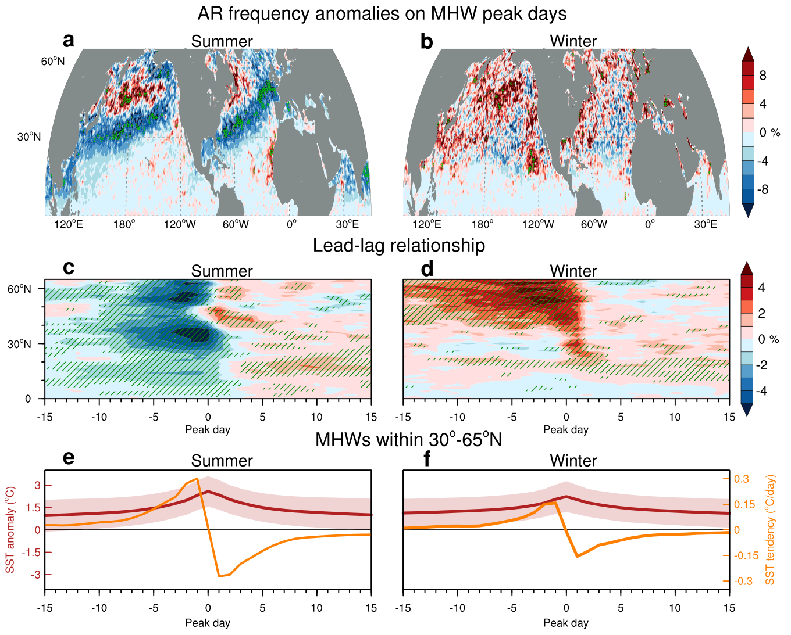
a, b Composite anomalies of daily AR frequency (%) on MHW peak days during boreal summer (June–August) and winter (December–February).
a、b，北半球夏季（6–8月）和冬季（12–2月）海洋热浪峰值日逐日大气河频率（%）的合成异常。
c, d Composite anomalies of zonal-mean daily AR frequency (%) from 15 days before (−15) to 15 days after (+15) MHW peak days in summer and winter.
c、d，夏季和冬季海洋热浪峰值日前15天（−15）至后15天（+15）的纬向平均逐日大气河频率（%）合成异常。
Hatched regions indicate areas where composite anomalies are statistically significant at the 90% confidence level.
阴影线区域表示合成异常在90%置信水平上具有统计显著性的区域。
e, f Composite of sea surface temperature (SST) anomalies (°C; red line) and the tendency of SST anomalies (°C/day; orange line) for all MHW events within the 30°N–65°N band, from 15 days before (−15) to 15 days after (+15) MHW peak days in boreal summer and winter.
e、f，北半球夏季和冬季30°N–65°N纬度带内全部海洋热浪事件中，从峰值日前15天（−15）至后15天（+15）的海表温度（SST）异常（°C；红线）及SST异常倾向（°C/day；橙线）的合成。
The pink shading indicates the spread (±1 standard deviation) among the MHW events.
粉色阴影表示海洋热浪事件之间的离散范围（±1个标准差）。
The analysis period is 1982–2023 for all the panels.
所有面板的分析时段均为1982–2023年。
Mechanisms of AR-induced SST changes
大气河引起海表温度变化的机制
The pronounced seasonal contrast in AR-induced SST changes, which manifests as a horseshoe pattern in summer and a basinwide structure in winter, raises the question of what physical processes govern these distinct spatial structures.
大气河引起的海表温度变化存在显著季节反差——夏季为马蹄形型态、冬季为全海盆结构——这提出了一个问题：哪些物理过程控制这些不同的空间结构？
To answer this question, we conduct an ocean mixed-layer heat budget analysis on the AR days over the period of 1993–2023 with a daily, global ocean reanalysis dataset (Methods).
为回答这一问题，我们利用一个逐日全球海洋再分析数据集，对1993–2023年大气河日进行海洋混合层热收支分析（方法）。
Limited by data availability, this analysis period is shorter than that for our previous analysis of MHW-AR relation (i.e., 1982-2023), but the composite SST tendency patterns on AR days remain nearly unchanged between the two periods (Supplementary Fig. 5), confirming the robustness of these results.
受数据可得性限制，该分析时段短于先前海洋热浪–大气河关系分析的时段（即1982–2023年）；但两个时段中大气河日的合成海表温度倾向型态几乎不变（补充图5），从而确认了这些结果的稳健性。
Among the heat budget terms, net surface heat flux (Qnet) acts as the dominant driver of the AR-associated SST tendency in both summer and winter (Fig. 2b, f), resembling the observed SST tendency patterns (Fig. 2a, e) with a spatial correlation of 0.42 and 0.72 (p < 0.01), respectively.
在热收支项中，净表面热通量（Qnet）是夏季和冬季与大气河相关的海表温度倾向的主导驱动（图2b、f）；其型态与观测到的海表温度倾向型态（图2a、e）相似，空间相关系数分别为0.42和0.72（p < 0.01）。
Horizontal oceanic advection has only a limited contribution in both seasons (Fig. 2c, g), and its large-scale feature is mainly shaped by the meridional Ekman advection associated with consistent surface wind changes (Supplementary Figs. 6 and 7).
水平海洋平流在两个季节的贡献均有限（图2c、g），其大尺度特征主要由与一致的地表风变化相关的经向埃克曼平流塑造（补充图6和7）。
More specifically, a westerly (easterly) wind anomaly tends to induce an anomalous southward (northward) Ekman transport and therefore a cooling (warming) effect.
更具体地说，西风（东风）异常倾向于诱发异常向南（向北）的埃克曼输送，因而产生冷却（增暖）效应。
Hsu et al.³⁷ reported similar features of AR-associated oceanic heat advection in the North Pacific during October-March, and the small difference between our results comes mainly from the definition of seasons and the ocean reanalysis dataset used (Supplementary Fig. 8).
Hsu等人³⁷报告了北太平洋10月至次年3月与大气河相关海洋热平流的相似特征；本研究结果与其结果之间的小差异主要来自季节定义和所用海洋再分析数据集的不同（补充图8）。
The residual term mainly includes unresolved processes such as vertical entrainment, vertical mixing, horizontal diffusion, and other subgrid-scale variability.
残差项主要包括未解析过程，如垂直卷入、垂直混合、水平扩散及其他次网格尺度变率。
It may also partly arise from the fact that the surface heat flux and ocean fields during 1993–2018 are derived from different data sources (see “Methods” for a detailed discussion).
它也可能部分源于1993–2018年表面热通量与海洋场来自不同数据源这一事实（详见“方法”）。
The residual term shows a modest contribution (Fig. 2d, h) and exhibits generally similar spatial structures as the Qnet term but with an opposite, weaker magnitude, which implies a damping effect of oceanic processes as opposed to atmospheric forcing, broadly consistent with Hsu et al.³⁷.
残差项贡献适中（图2d、h），其空间结构总体上与Qnet项相似，但幅度更弱、符号相反；这意味着海洋过程相对于大气强迫具有阻尼效应，整体上与Hsu等人³⁷一致。
To further quantify this oceanic damping effect, we computed basin-wide spatial correlations between the Qnet-induced SST tendency and the SST tendency associated with the residual term.
为进一步量化这种海洋阻尼效应，我们计算了Qnet诱导的海表温度倾向与残差项相关海表温度倾向之间的全海盆空间相关。
In winter, the correlations are –0.60 for the full study region, –0.58 for the North Atlantic, and –0.60 for the North Pacific.
冬季，全研究区、北大西洋和北太平洋的相关系数分别为–0.60、–0.58和–0.60。
These strong negative correlations indicate that the residual term consistently offsets the basin-scale SST tendency pattern forced by Qnet.
这些强负相关表明，残差项持续抵消由Qnet强迫的海盆尺度海表温度倾向型态。
In summer, the correlations are weaker (–0.34, –0.33, and –0.32, respectively), indicating a reduced but still evident damping effect.
夏季相关性较弱（分别为–0.34、–0.33和–0.32），表明阻尼效应减弱但仍然明显。
The residual term is also positively correlated with summertime mixed-layer depth (MLD) anomalies (r = 0.45), suggesting that regions with a deeper (shallower) ocean mixed layer tend to experience weaker (stronger) residual cooling.
残差项还与夏季混合层深度（MLD）异常正相关（r = 0.45），说明海洋混合层较深（较浅）的区域倾向于经历较弱（较强）的残差冷却。
Such behavior is physically consistent with vertical mixing processes: when the mixed layer is shallow, the SST is more sensitive to mixing-induced cooling, leading to an enhanced cooling.
这种行为在物理上与垂直混合过程一致：当混合层较浅时，海表温度对混合诱导的冷却更敏感，从而导致增强的冷却。
Taken together, these results highlight the dominant role of net surface heat flux in regulating the SST response to ARs.
总体而言，这些结果凸显了净表面热通量在调节海表温度对大气河响应中的主导作用。
What are the detailed processes underlying the ARs’ influence on net surface heat flux?
大气河影响净表面热通量的具体过程是什么？
Why are these impacts dependent on season?
为什么这些影响依赖于季节？
To answer these questions, we decompose the net surface heat flux and quantify the contribution from each term of radiative and turbulent heat fluxes.
为回答这些问题，我们分解净表面热通量，并量化辐射和湍流热通量各分项的贡献。
Climatologically, net shortwave radiative flux is directed downward into the ocean, while net longwave radiative flux is upward (Supplementary Fig. 9b, c, g, h).
从气候态看，净短波辐射通量向下进入海洋，而净长波辐射通量向上（补充图9b、c、g、h）。
The turbulent heat fluxes including latent and sensible heat fluxes are predominantly upward over most of the study region (Supplementary Fig. 9d, e, i, j), indicating a net heat transfer from the ocean to the atmosphere.
在研究区大部分区域，包括潜热和感热通量在内的湍流热通量以向上为主（补充图9d、e、i、j），表明净热量由海洋传向大气。
An AR can influence MHW through all four components: it has a cooling effect through a reduced net downward shortwave radiative flux, and warming effects through a reduced net upward longwave radiative flux and weakened, or locally reversed, turbulent latent and sensible heat fluxes from the ocean to the atmosphere (Fig. 2i; also see Supplementary Fig. 10 for spatial structures).
大气河可通过全部四个分量影响海洋热浪：减少净向下短波辐射通量产生冷却效应；减少净向上长波辐射通量，以及减弱或在局地反转自海洋向大气的湍流潜热和感热通量，产生增暖效应（图2i；空间结构另见补充图10）。
Specifically, the reduced net downward shortwave radiative flux is due mainly to the increase of clouds when ARs are active (Supplementary Fig. 11), while the reduced net upward longwave radiative flux is caused by the enhanced greenhouse effects of water vapor and clouds (Supplementary Fig. 12).
具体而言，净向下短波辐射通量的减少主要源于大气河活跃时云量增加（补充图11）；而净向上长波辐射通量的减少则由水汽和云增强的温室效应造成（补充图12）。
The increase of surface wind speed associated with ARs tends to enhance ocean heat loss through turbulent latent and sensible heat fluxes, but this cooling effect is outweighed by the warming effect of the warm, moist air transported by ARs through the enhanced downward turbulent heat fluxes (Fig. 2j, k; also see Supplementary Fig. 13 for spatial structures).
与大气河相关的地表风速增强倾向于通过湍流潜热和感热通量增强海洋热损失，但这种冷却效应被大气河输送的暖湿空气通过增强向下湍流热通量产生的增暖效应所超过（图2j、k；空间结构另见补充图13）。
These characteristics are generally consistent with the annual-mean, AR-related surface heat flux anomalies shown by ref. 38., and below we further discuss the distinct features for winter and summer, separately.
这些特征总体上与文献38所示年平均、与大气河相关的表面热通量异常一致；下文将分别进一步讨论冬季和夏季的不同特征。
The seasonal contrast in AR-associated net surface heat flux change results from a delicate compensation among these competing cooling and warming effects that can each independently vary with season.
与大气河相关的净表面热通量变化的季节反差，源于这些彼此竞争且各自可随季节独立变化的冷却和增暖效应之间的微妙补偿。
The cloud-induced shortwave radiative cooling effect associated with ARs is particularly strong in summer when the background incoming solar radiation is large (Supplementary Fig. 11).
当背景入射太阳辐射较大时，云致的、与大气河相关的短波辐射冷却效应在夏季尤其强（补充图11）。
Fig. 2 | Spatial decomposition of sea surface temperature (SST) tendency based on ocean mixed-layer heat budget analysis and components of net surface heat flux (Qnet) anomalies during atmospheric river (AR) days.
图2｜基于海洋混合层热收支分析的海表温度（SST）倾向空间分解，以及大气河（AR）日净表面热通量（Qnet）异常的分量。
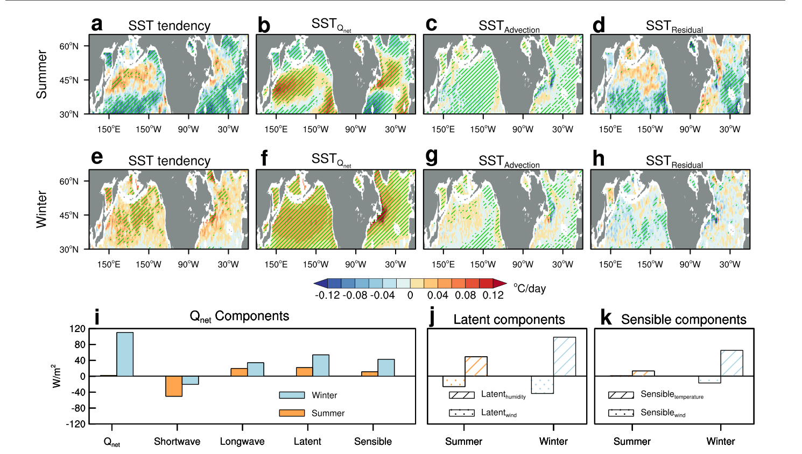
a–d Composite SST tendency (°C/day) and the contributions from net surface heat flux (SSTQnet), horizontal oceanic advection (SSTAdvection), and the residual term (SSTresidual) during summer AR days over the period 1993–2023.
a–d，1993–2023年夏季大气河日的合成海表温度倾向（°C/day），以及净表面热通量（SSTQnet）、水平海洋平流（SSTAdvection）和残差项（SSTresidual）的贡献。
e–h Same as (a–d), but for winter AR days.
e–h，同a–d，但对应冬季大气河日。
Hatched regions indicates areas where composite anomalies are statistically significant at the 90% confidence level.
阴影线区域表示合成异常在90%置信水平上具有统计显著性的区域。
i Composites of Qnet, net surface shortwave radiation, net surface longwave radiation, latent heat flux, and sensible heat flux anomalies (W/m2) during AR days in summer (orange bars) and winter (blue bars).
i，夏季（橙色柱）和冬季（蓝色柱）大气河日的Qnet、净表面短波辐射、净表面长波辐射、潜热通量及感热通量异常（W/m2）的合成。
j Decomposition of anomalous latent heat flux (W/m2) into contributions from wind speed anomalies (Latentwind) and air–sea specific humidity difference anomalies (Latenthumidity).
j，异常潜热通量（W/m2）分解为风速异常（Latentwind）和海气比湿差异常（Latenthumidity）的贡献。
k Decomposition of anomalous sensible heat flux (W/m2) into contributions from wind speed anomalies (Sensiblewind) and air–sea temperature difference anomalies (Sensibletemperature).
k，异常感热通量（W/m2）分解为风速异常（Sensiblewind）和海气温差异常（Sensibletemperature）的贡献。
The greenhouse effects of water vapor and clouds associated with ARs are stronger in winter as the background atmospheric emissivity is relatively small and so there is less overlap of longwave absorption band (Supplementary Fig. 12).
与大气河相关的水汽和云温室效应在冬季更强，因为背景大气发射率相对较小，因而长波吸收带的重叠较少（补充图12）。
The effects of AR-associated warm and moist air on surface turbulent heat fluxes are stronger in winter (Fig. 2j, k; and Supplementary Fig. 13), caused by both stronger background winds and enhanced air–sea humidity and temperature contrasts (Supplementary Figs. 14 and 15).
与大气河相关的暖湿空气对表面湍流热通量的影响在冬季更强（图2j、k及补充图13），这既由更强的背景风引起，也由增强的海气湿度和温度差异引起（补充图14和15）。
In summary, modulated by the background atmospheric state, the AR-associated warming effects through turbulent and longwave radiative fluxes are stronger in winter, while the AR-associated shortwave cooling effect is stronger in summer.
总之，受背景大气状态调制，大气河通过湍流和长波辐射通量产生的增暖效应在冬季更强，而与大气河相关的短波冷却效应在夏季更强。
The collective effect of ARs in the North Pacific and the North Atlantic is to generally suppress MHWs in summer, except for the mid-latitude band (~40-50°N), but to favor MHWs in winter (Fig. 3).
北太平洋和北大西洋中大气河的综合作用总体上会在夏季抑制海洋热浪（中纬度带约40–50°N除外），而在冬季有利于海洋热浪（图3）。
To further elucidate the horseshoe-shaped summer pattern, we decomposed the Qnet anomalies over the positive and negative SST tendency regions shown in Fig. 2a.
为进一步阐明夏季马蹄形型态，我们分解了图2a所示海表温度倾向正、负区域的Qnet异常。
As shown in Supplementary Fig. 16, during summer, the shortwave and longwave radiative flux anomalies associated with AR events are comparable between the two areas.
如补充图16所示，夏季两个区域中与大气河事件相关的短波和长波辐射通量异常相当。
In contrast, turbulent heat flux anomalies (including both sensible and latent components) are much stronger in the midlatitude positive SST tendency band, ~twice those in the negative SST tendency region, which is in turn due mainly to the enhanced air-sea temperature and humidity contrast anomalies (Supplementary Fig. 15a, c).
相比之下，中纬度海表温度倾向正值带内的湍流热通量异常（包括感热和潜热分量）强得多，约为海表温度倾向负值区域的两倍；这主要又是由增强的海气温度和湿度差异异常所致（补充图15a、c）。
The enhanced warming effect associated with the turbulent heat flux anomalies acts to offset the cooling effect associated with the shortwave radiative flux anomalies, resulting in a net surface heat gain in the midlatitude band and therefore a horseshoe-shaped pattern in summer.
与湍流热通量异常相关的增强增暖效应抵消了与短波辐射通量异常相关的冷却效应，导致中纬度带净表面获热，进而在夏季形成马蹄形型态。
Discussion / 讨论
In this study, we have identified ARs’ seasonally dependent fingerprints on the MHWs in the North Pacific and Atlantic through observational analysis, as summarized in Fig. 3.
本研究通过观测分析识别了大气河在北太平洋和北大西洋海洋热浪上随季节变化的印记，如图3所概括。
When ARs are present, the associated clouds tend to cool the ocean by reducing the downward shortwave radiative flux, while the warm and moist air tends to warm the ocean through both reducing turbulent heat fluxes (both latent and sensible) from the ocean to the atmosphere and increasing downward longwave radiative flux.
当大气河出现时，其相关云通过减少向下短波辐射通量倾向于冷却海洋；而暖湿空气则通过减少自海洋向大气的湍流热通量（潜热和感热）并增加向下长波辐射通量，倾向于使海洋增暖。
Modulated by the background atmospheric state, these flux components delicately work together to yield a seasonally dependent net effect.
在背景大气状态调制下，这些通量分量以微妙的方式共同作用，产生依赖季节的净效应。
AR frequency anomalies precede MHW peaks by several days with distinct spatial signatures—a horseshoe-shaped pattern with mainly negative anomalies in summer and a basinwide pattern with mainly positive anomalies in winter.
大气河频率异常以不同空间特征领先于海洋热浪峰值数日：夏季为以负异常为主的马蹄形型态，冬季为以正异常为主的全海盆型态。
In addition to surface heat fluxes, AR-associated precipitation may potentially influence upper-ocean thermal variability through freshwater-induced stratification and changes in vertical mixing⁴²˒⁴³.
除表面热通量外，与大气河相关的降水还可能通过淡水诱导的层化和垂直混合变化影响上层海洋热变率⁴²˒⁴³。
However, isolating the independent contribution of AR-related precipitation on SST variability from observational datasets is challenging.
然而，从观测数据集中分离出与大气河相关的降水对海表温度变率的独立贡献十分困难。
Quantifying this effect will require targeted climate model simulations that warrant future investigations.
对这一效应进行量化将需要有针对性的气候模式模拟，值得在未来进一步研究。
While background ocean warming sets the stage for more frequent and intense MHWs, ARs can modulate their timing, intensity, and spatial structure on synoptic scales.
背景海洋变暖为更频繁、更强的海洋热浪创造了条件，而大气河可在天气尺度上调制其发生时间、强度和空间结构。
Recognizing ARs as a key forcing mechanism for MHWs advances our understanding of extreme ocean temperature variability and underscores the need for further investigation into their role in MHW dynamics.
将大气河视为海洋热浪的关键强迫机制，推进了我们对极端海洋温度变率的认识，并强调有必要进一步研究其在海洋热浪动力学中的作用。
Beyond this one-way influence, previous studies have suggested the possibility of feedbacks from MHWs to AR characteristics.
除这种单向影响外，既有研究提出海洋热浪可能对大气河特征产生反馈。
For example, a recent study focusing on MHWs in the northeastern Pacific showed that ARs following MHW peak days tend to be stronger and shifted northeastward compared to ARs not associated with MHWs⁴⁴.
例如，一项聚焦东北太平洋海洋热浪的近期研究显示，相比与海洋热浪无关的大气河，海洋热浪峰值日之后的大气河倾向于更强且向东北偏移⁴⁴。
In addition, case-based studies indicated that anomalously warm SST may enhance moisture convergence along AR pathways⁴⁵.
此外，个例研究表明，异常偏暖的海表温度可能增强沿大气河路径的水汽辐合⁴⁵。
Together, these results point to potential two-way interactions between ARs and MHWs; however, quantifying such feedbacks is beyond the scope of the present study and will require targeted investigation using fully coupled atmosphere–ocean models.
综合而言，这些结果指向大气河与海洋热浪之间潜在的双向相互作用；但是，量化这类反馈超出本研究范围，并需要使用全耦合大气–海洋模式进行有针对性的研究。
ARs are closely linked to synoptic atmospheric variability in the extra-tropics, including extratropical cyclones, storm tracks, atmospheric blocking systems, jet streams, etc⁴⁶–⁴⁸.
大气河与热带外天气尺度大气变率密切相关，包括温带气旋、风暴路径、大气阻塞系统、急流等⁴⁶–⁴⁸。
Our findings highlight AR variability as an important but previously overlooked atmospheric pathway that connects MHW events to these large-scale atmospheric circulation variability in the extratropical oceans.
我们的发现突出表明，大气河变率是一个重要但此前被忽略的大气途径，它将海洋热浪事件与热带外海洋中这些大尺度大气环流变率联系起来。
For example, atmospheric blocking, defined as a quasi-stationary high-pressure system, exerts a strong influence on MHWs through reduced wind speed and increased shortwave radiation⁴⁰˒⁴⁹.
例如，大气阻塞被定义为准静止高压系统，可通过降低风速和增加短波辐射对海洋热浪施加强影响⁴⁰˒⁴⁹。
At the same time, these persistent anticyclonic anomalies can alter large-scale flow and moisture distribution, therefore modulating the propagation and intensity of ARs⁴⁸˒⁵⁰˒⁵¹.
同时，这些持续的反气旋异常可改变大尺度气流和水汽分布，从而调制大气河的传播和强度⁴⁸˒⁵⁰˒⁵¹。
Whether ARs can feed back onto the synoptic circulation variability through moisture convergence and the interactions with MHWs is not fully understood.
大气河是否能够通过水汽辐合以及与海洋热浪的相互作用反馈到天气尺度环流变率，尚未得到充分理解。
Our results further suggest that the changes in AR characteristics under a warming climate may influence the occurrence and intensity of MHWs in the extra-tropics⁵²–⁵⁴.
我们的结果进一步表明，变暖气候下大气河特征的变化可能影响热带外海洋热浪的发生和强度⁵²–⁵⁴。
Conversely, intensifying MHWs under global warming may in turn feed back onto the atmospheric circulation to reshape AR activity⁴⁵˒⁵⁵˒⁵⁶.
相反，全球变暖下增强的海洋热浪又可能反馈至大气环流，重塑大气河活动⁴⁵˒⁵⁵˒⁵⁶。
The interaction between ARs and MHWs may represent a key pathway for the emergence of compound ocean–atmosphere extremes under future warming, critical for marine ecosystems and regional hydroclimate.
大气河与海洋热浪之间的相互作用可能代表未来变暖条件下海气复合极端事件出现的一条关键途径，对海洋生态系统和区域水文气候至关重要。
Future research is needed to assess the two-way mutual interactions between MHWs and ARs in observations and coupled climate models, and to explore the potential to improve the short-term forecast and long-term projection of MHWs by accounting for these interactions.
未来需要在观测和耦合气候模式中评估海洋热浪与大气河的双向相互作用，并探索通过考虑这些相互作用来改进海洋热浪短期预报和长期预估的潜力。
Fig. 3 | Mechanistic schematic for the fingerprints of atmospheric rivers (ARs) on marine heatwaves (MHWs).
图3｜大气河（ARs）作用于海洋热浪（MHWs）的印记之机制示意图。
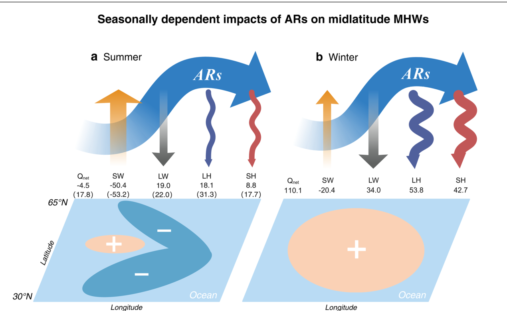
Seasonally varying fingerprints of ARs on the development of MHWs are detected in the North Pacific and Atlantic (30°–65°N).
在北太平洋和北大西洋（30°–65°N）检测到大气河对海洋热浪发展具有季节差异的印记。
The impacts of ARs on the underlying ocean temperature exhibit a horseshoe-shaped pattern in boreal summer (a) and a basinwide pattern (b) in boreal winter.
大气河对下垫面海洋温度的影响在北半球夏季呈马蹄形型态（a），在北半球冬季呈全海盆型态（b）。
The decomposition of AR-induced net surface heat flux (Qnet) anomalies averaged over 30°–65°N is also shown.
图中还给出了在30°–65°N平均的大气河诱导净表面热通量（Qnet）异常的分解。
SW, LW, LH, and SH denote net surface shortwave radiation, net surface longwave radiation, latent heat flux and sensible heat flux, respectively.
SW、LW、LH和SH分别表示净表面短波辐射、净表面长波辐射、潜热通量和感热通量。
See text for details.
详细内容见正文。
See text for details of the individual heat flux components (W/m2).
各热通量分量（W/m2）的细节见正文。
In panel (a), values inside and outside the parentheses correspond to the negative and positive sea surface temperature (SST) tendency regions, respectively.
在面板（a）中，括号内和括号外的数值分别对应海表温度（SST）倾向负值和正值区域。
Methods / 方法
Datasets
数据集
MHWs are analyzed using the NOAA Daily Optimum Interpolation Sea Surface Temperature dataset, version 2.1 (DOISST v2.1)⁵⁷.
使用NOAA逐日最优插值海表温度数据集2.1版（DOISST v2.1）⁵⁷分析海洋热浪。
The original daily SST data, available at 0.25° × 0.25° resolution, are regridded to a regular 1° × 1° grid by spatial averaging within each 1° cell prior to the calculation of MHW characteristics.
原始逐日海表温度数据的分辨率为0.25° × 0.25°；在计算海洋热浪特征前，通过对每个1°网格内进行空间平均，将其重网格至规则的1° × 1°网格。
Daily atmospheric fields are obtained from the fifth major global reanalysis produced by European Center for Medium-Range Weather Forecasts (ECMWF) v5 (ERA5) dataset, with a horizontal resolution of 1° × 1°⁵⁸.
逐日大气场取自欧洲中期天气预报中心（ECMWF）第五代全球再分析数据集v5（ERA5），其水平分辨率为1° × 1°⁵⁸。
Variables used include net surface sensible heat flux, latent heat flux, shortwave and longwave radiative fluxes (both all-sky and clear-sky), 2-m air temperature, specific humidity, and 10-m horizontal winds.
所用变量包括净表面感热通量、潜热通量、短波和长波辐射通量（全天空和晴空）、2 m气温、比湿和10 m水平风。
The analysis spans the period of 1982–2023, with anomalies computed relative to the climatological mean over the same period.
分析覆盖1982–2023年，异常相对于同期气候态平均值计算。
Daily SST outputs from the CMIP6 historical simulations are used to identify MHW peak days in 15 selected models (Supplementary Information Table 1).
使用CMIP6历史模拟的逐日海表温度输出，在15个选定模式中识别海洋热浪峰值日（补充信息表1）。
Daily specific humidity and pressure-level horizontal winds from each model are used to calculate vertically integrated water vapor transport (IVT).
使用每个模式的逐日比湿和等压面水平风计算整层水汽输送（IVT）。
To ensure consistency among models, only one ensemble member (r1i1p1f1) from each model is included in the analysis.
为保证模式间一致性，分析中每个模式只纳入一个集合成员（r1i1p1f1）。
The model analyses cover the period 1980–2014.
模式分析覆盖1980–2014年。
To investigate the mechanisms underlying the seasonal contrast in AR-associated SST responses, we perform an ocean mixed layer heat budget analysis using the GLORYS12V1 global ocean reanalysis⁵⁹ together with surface heat fluxes from ERA5.
为研究与大气河相关的海表温度响应季节反差背后的机制，我们使用GLORYS12V1全球海洋再分析资料⁵⁹以及ERA5表面热通量开展海洋混合层热收支分析。
GLORYS12V1 is based on the operational global forecasting system of the Copernicus Marine Environment Monitoring Service (CMEMS) and employs the NEMO ocean model, which is forced at the surface by atmospheric fluxes from ECMWF reanalysis—ERA-Interim before 2018 and ERA5 after 2019.
GLORYS12V1基于哥白尼海洋环境监测服务（CMEMS）的业务全球预报系统，采用NEMO海洋模式；该模式在海表受ECMWF再分析大气通量强迫，2018年前使用ERA-Interim，2019年后使用ERA5。
We recalculated the ocean mixed layer heat budget in Fig. 2 but for the period of 2019–2023, during which there was no inconsistency issue (i.e., GLORYS12V1 is forced by ERA5).
我们还对2019–2023年重新计算了图2中的海洋混合层热收支；该时段不存在不一致问题（即GLORYS12V1受ERA5强迫）。
Overall, the results (Supplementary Fig. 17) are similar to those for the entire period (Fig. 2), but much noisier due to the shorter period and therefore the smaller sample size being used.
总体而言，结果（补充图17）与全时段结果（图2）相似，但由于时段更短、所用样本量因而更小，噪声大得多。
Also, we examined the Qnet-induced SST tendency over the entire period, as well as separately before 2018 and after 2019.
此外，我们考察了全时段以及2018年前和2019年后分别的Qnet诱导海表温度倾向。
The spatial patterns and seasonal characteristics are overall very similar for those three periods (Supplementary Fig. 18).
这三个时段的空间型态和季节特征总体上非常相似（补充图18）。
These tests provide us additional confidence in the robustness of our results, although they do not completely eliminate the inherent uncertainty in interpreting the residual term.
这些检验进一步增强了我们对结果稳健性的信心，尽管它们并未完全消除解释残差项时固有的不确定性。
Therefore, ERA5 is used consistently in this study to derive AR-related surface heat fluxes and atmospheric variables across the full analysis period, ensuring a uniform atmospheric reference framework.
因此，本研究在整个分析时段一致使用ERA5来获取与大气河相关的表面热通量和大气变量，以确保统一的大气参照框架。
GLORYS12V1 provides daily output at 1/12° horizontal resolution with 50 vertical levels and spans the satellite altimetry era beginning in 1993.
GLORYS12V1提供水平分辨率为1/12°、具有50个垂直层的逐日输出，覆盖自1993年开始的卫星测高时代。
The variables used in this study include mixed-layer depth (MLD), ocean potential temperature, and ocean currents.
本研究使用的变量包括混合层深度（MLD）、海洋位温和海流。
In GLORYS12V1, the MLD is diagnosed using a density-based criterion and is defined as the depth at which the potential density increase relative to the density at 10 m corresponds to a temperature decrease of 0.2 °C under local surface conditions.
在GLORYS12V1中，MLD采用基于密度的准则诊断，定义为在当地海表条件下、相对于10 m深度密度的位密度增加对应0.2 °C温度下降的深度。
Statistical analysis
统计分析
To evaluate the robustness of the AR–MHW relationship identified in this study, statistical significance tests were applied to the composite fields using a two-tailed Student’s t-test.
为评估本研究识别出的大气河–海洋热浪关系的稳健性，采用双尾Student’s t检验对合成场进行了统计显著性检验。
In addition, to examine whether the identified relationship is influenced by long-term trends, all analyses were repeated using linearly detrended datasets at each grid point.
此外，为检验所识别关系是否受长期趋势影响，使用每个网格点线性去趋势的数据集重复了所有分析。
The main conclusion remains unchanged, indicating that the results are not driven by long-term variability (Supplementary Fig. 19).
主要结论保持不变，说明结果并非由长期变率驱动（补充图19）。
MHWs definition
海洋热浪定义
A MHW is defined as a discrete, prolonged, and anomalously warm ocean event, occurring when daily SST exceeds a seasonally varying 90th percentile threshold for at least five consecutive days⁴.
海洋热浪被定义为离散、持续且异常温暖的海洋事件，即逐日海表温度超过随季节变化的第90百分位阈值至少连续5天时发生⁴。
The threshold is computed for each calendar day by first estimating the 90th percentile of daily SST using data within an 11-day window centered on that day across all years.
对每个日历日，先使用所有年份中以该日为中心的11天窗口内数据估计逐日海表温度第90百分位数，以计算该阈值。
To ensure temporal continuity, the resulting daily threshold is subsequently smoothed using a 31-day moving average.
为确保时间连续性，所得逐日阈值随后使用31天滑动平均进行平滑。
Events separated by fewer than three days are treated as a single MHW.
间隔少于3天的事件被视为同一个海洋热浪。
The peak day of each event is defined as the day on which SST reaches its maximum during the event.
每个事件的峰值日定义为该事件期间海表温度达到最大值之日。
For DOISST-based analysis, the climatological period is 1982–2023, whereas for GLORYS-based analysis, the threshold is computed over the 1993–2023 period.
对基于DOISST的分析，气候态时段为1982–2023年；而对基于GLORYS的分析，阈值在1993–2023年时段内计算。
Based on these peak days, composites of AR frequency anomalies are computed by averaging daily AR frequency anomalies across all identified MHW peak days in each grid.
基于这些峰值日，通过在每个网格内对所有已识别海洋热浪峰值日的逐日大气河频率异常进行平均，计算大气河频率异常合成。
Composites are constructed separately for boreal summer and winter, enabling assessment of seasonal contrasts in AR activity associated with extreme ocean warming (Fig. 1).
对北半球夏季和冬季分别构建合成，以评估与极端海洋增暖相关的大气河活动的季节反差（图1）。
ARs definition
大气河定义
Multiple AR detection algorithms have been proposed before (see a review in ref. 60).
此前已提出多种大气河检测算法（综述见文献60）。
In this study, we use the ARs identified using a detection algorithm based on IVT, calculated from ERA5 6-h wind and specific humidity fields, vertically integrated from 1000 to 300 hPa on a 0.25° × 0.25° global grid⁶¹.
本研究使用基于IVT检测算法识别的大气河；IVT由ERA5 6小时风和比湿场在0.25° × 0.25°全球网格上从1000至300 hPa垂直积分计算得到⁶¹。
A grid cell is tagged as part of an AR if the IVT exceeds the location- and month-specific 85th percentile threshold that is computed with a five-month moving window centered on each calendar month.
如果IVT超过按位置和月份确定的第85百分位阈值，则将网格标记为大气河的一部分；该阈值通过以每个日历月为中心的5个月滑动窗口计算。
To qualify as an AR, a group of tagged grid cells must have a total length exceeding 2000 km and a length-to-width ratio of at least 2.
要被判定为大气河，一组被标记的网格必须具有超过2000 km的总长度和至少为2的长宽比。
For consistency with the analysis framework, the AR detection results are regridded to a 1° × 1° spatial resolution.
为与分析框架保持一致，将大气河检测结果重网格至1° × 1°空间分辨率。
Given the use of 6-h input data, up to four AR detections may occur at each grid cell per day.
鉴于使用6小时输入数据，每个网格每天至多可出现4次大气河检测。
Daily AR frequency is defined as the fraction of these 6-h time steps during which AR conditions are detected at each grid cell.
逐日大气河频率定义为每个网格在这些6小时时间步中检测到大气河条件的时间步所占比例。
A calendar day is classified as an “AR day” at a given grid point if AR conditions are detected in more than two of the four 6-h time steps within that day, regardless of whether the detections are consecutive.
在给定网格点，如果一个日历日内4个6小时步中有超过2个检测到大气河条件，则该日被分类为“大气河日”，不论这些检测是否连续。
To assess the oceanic response to AR activity, we compute composites of SST tendency—defined as the day-to-day change in SST—on AR days.
为评估海洋对大气河活动的响应，我们计算大气河日海表温度倾向的合成；海表温度倾向定义为海表温度的日际变化。
These composites are constructed separately for boreal summer and winter.
对北半球夏季和冬季分别构建这些合成。
To better assess the robustness of the AR–MHW relationship to AR detection algorithms, we additionally analyzed the ARs detected by two independent AR detection algorithms: AR-CONNECT⁶², which is an object-based tracking algorithm using absolute IVT thresholds, and Lora v2⁶³˒⁶⁴, a hybrid relative–absolute detection method that accounts for background climate variability.
为更好评估大气河–海洋热浪关系对大气河检测算法的稳健性，我们还分析了两种独立算法检测到的大气河：AR-CONNECT⁶²（一种使用绝对IVT阈值的基于对象的追踪算法）和Lora v2⁶³˒⁶⁴（一种考虑背景气候变率的相对–绝对混合检测方法）。
The spatial structures and seasonal contrasts are overall qualitatively similar among these algorithms, although quantitative differences in AR anomaly magnitude are present (Supplementary Fig. 20 and Supplementary Fig. 21).
这些算法所得的空间结构和季节反差总体上在定性上相似，尽管大气河异常幅度存在定量差异（补充图20和补充图21）。
Mixed-layer heat budget
混合层热收支
To understand atmospheric and oceanic processes responsible for SST variability during AR and MHW events, we conduct an ocean mixed-layer heat budget analysis.
为理解大气河和海洋热浪事件期间导致海表温度变率的大气和海洋过程，我们开展海洋混合层热收支分析。
The ocean surface temperature tendency is expressed as:
海洋表面温度倾向表示为：
\(\frac{\partial T}{\partial t}=\frac{Q_{\mathrm{net}}}{\rho C_p h}-\mathbf{V}\cdot\nabla T+\varepsilon\) (1)
\(\frac{\partial T}{\partial t}=\frac{Q_{\mathrm{net}}}{\rho C_p h}-\mathbf{V}\cdot\nabla T+\varepsilon\) （1）
where \(T\) is the SST, \(\rho\) is the seawater density, \(C_p\) is the specific heat capacity of seawater, and \(h\) is the ocean mixed-layer depth.
其中，\(T\)为海表温度，\(\rho\)为海水密度，\(C_p\)为海水比热容，\(h\)为海洋混合层深度。
\(Q_{\mathrm{net}}\) denotes the net surface heat fluxes, and \(-\mathbf{V}\cdot\nabla T\) represents the horizontal advection of temperature within the mixed layer.
\(Q_{\mathrm{net}}\)表示净表面热通量，\(-\mathbf{V}\cdot\nabla T\)表示混合层内温度的水平平流。
All mixed-layer heat budget terms are computed diagnostically in this study.
本研究以诊断方式计算所有混合层热收支项。
Specifically, daily mixed-layer depth, ocean potential temperature, and ocean currents are obtained from the GLORYS12V1 reanalysis, while the net surface heat flux is derived from the ERA5 reanalysis.
具体而言，逐日混合层深度、海洋位温和海流取自GLORYS12V1再分析资料，而净表面热通量取自ERA5再分析资料。
The horizontal advection term is calculated using daily horizontal currents and temperature gradients within the mixed layer.
水平平流项使用逐日水平海流和混合层内温度梯度计算。
The residual term ε is estimated as the imbalance of the heat budget and represents the combined effects of unresolved processes within the mixed layer, including vertical entrainment, vertical mixing, horizontal diffusion, and other subgrid-scale processes.
残差项ε估算为热收支的不平衡量，代表混合层内未解析过程的综合效应，包括垂直卷入、垂直混合、水平扩散及其他次网格尺度过程。
Linear decomposition of sensible and latent heat flux anomalies
感热和潜热通量异常的线性分解
Latent and sensible turbulent heat flux anomalies can be linearly decomposed using the bulk aerodynamic formulations.
潜热和感热湍流热通量异常可用总体空气动力学公式进行线性分解。
Specifically, the latent heat flux (LH) and sensible heat flux (SH) anomalies are approximated as:
具体而言，潜热通量（LH）和感热通量（SH）异常近似表示为：
\(LH'=\rho L_vC_e[U(q_s-q_a)]'\approx\rho L_vC_eU'(\overline{q_s}-\overline{q_a})+\rho L_vC_e\overline{U}(q_s'-q_a')\) (2)
\(LH'=\rho L_vC_e[U(q_s-q_a)]'\approx\rho L_vC_eU'(\overline{q_s}-\overline{q_a})+\rho L_vC_e\overline{U}(q_s'-q_a')\) （2）
\(SH'=\rho C_pC_h[U(T_s-T_a)]'\approx\rho C_pC_hU'(\overline{T_s}-\overline{T_a})+\rho C_pC_h\overline{U}(T_s'-T_a')\) (3)
\(SH'=\rho C_pC_h[U(T_s-T_a)]'\approx\rho C_pC_hU'(\overline{T_s}-\overline{T_a})+\rho C_pC_h\overline{U}(T_s'-T_a')\) （3）
where \(\rho\) is air density, \(L_v\) is the latent heat of vaporization, \(C_p\) is the specific heat capacity of air at constant pressure, and \(C_e\), \(C_h\) are the bulk transfer coefficients for moisture and heat, respectively.
其中，\(\rho\)为空气密度，\(L_v\)为汽化潜热，\(C_p\)为定压空气比热容，\(C_e\)和\(C_h\)分别为水汽和热量的总体传输系数。
\(U\) denotes wind speed, \(q_s\) and \(q_a\) are the specific humidity at the surface and in the overlying air, and \(T_s\) and \(T_a\) are the sea surface and near-surface air temperatures.
\(U\)表示风速，\(q_s\)和\(q_a\)分别为海表和上覆空气中的比湿，\(T_s\)和\(T_a\)分别为海表温度和近地面气温。
Prime (′) indicates anomalies, and overbar denotes climatological means.
撇号（′）表示异常，上划线表示气候态平均值。
This decomposition separates the contributions from wind anomalies and air-sea specific humidity (or temperature) anomalies.
该分解将风异常与海气比湿（或温度）异常的贡献分离开来。
Data and code availability / 数据与代码可得性
Data availability
数据可得性
All raw data used in this study are publicly available.
本研究使用的所有原始数据均可公开获取。
Daily sea surface temperature (SST) data were obtained from the NOAA OISST v2.1 dataset (https://psl.noaa.gov/data/gridded/data.noaa.oisst.v2.highres.html).
逐日海表温度（SST）数据来自NOAA OISST v2.1数据集（https://psl.noaa.gov/data/gridded/data.noaa.oisst.v2.highres.html）。
Atmospheric river (AR) data were obtained from the UCLA AR database (https://dataverse.ucla.edu/dataverse/ar).
大气河（AR）数据来自UCLA AR数据库（https://dataverse.ucla.edu/dataverse/ar）。
ERA5 atmospheric reanalysis data were retrieved from the Copernicus Climate Data Store (https://cds.climate.copernicus.eu/datasets).
ERA5大气再分析数据从哥白尼气候数据存储库获取（https://cds.climate.copernicus.eu/datasets）。
GLORYS ocean reanalysis data were obtained from the Copernicus Marine Service (https://data.marine.copernicus.eu/product/GLOBAL_MULTIYEAR_PHY_001_030/services).
GLORYS海洋再分析数据来自哥白尼海洋服务（https://data.marine.copernicus.eu/product/GLOBAL_MULTIYEAR_PHY_001_030/services）。
CMIP6 model output is available through a distributed data archive developed and operated by the Earth System Grid Federation (https://esgf-node.llnl.gov/projects/cmip6/).
CMIP6模式输出可通过地球系统网格联盟开发和运营的分布式数据档案获取（https://esgf-node.llnl.gov/projects/cmip6/）。
Processed data used for the analysis and main figure generation in this study is publicly available at (https://doi.org/10.6084/m9.figshare.32336352).
本研究分析和主要图件生成所用的处理后数据可在（https://doi.org/10.6084/m9.figshare.32336352）公开获取。
Code availability
代码可得性
Code for generating the main figures in this study is publicly available at (https://doi.org/10.6084/m9.figshare.32336352).
生成本研究主要图件的代码可在（https://doi.org/10.6084/m9.figshare.32336352）公开获取。
End matter / 文末信息
Acknowledgements
致谢
This research was supported by the NASA grant 80NSSC23K0988.
本研究得到NASA项目资助80NSSC23K0988的支持。
Author contributions
作者贡献
Suqiong H. and Shineng H. conceived the study.
Suqiong H.和Shineng H.构思了本研究。
Suqiong H. performed the analysis and wrote the first draft of the paper.
Suqiong H.完成了分析并撰写了论文初稿。
Shineng H. edited the paper.
Shineng H.编辑了论文。
All authors contributed to interpretation of the results and refinement of the paper.
全体作者均参与了解释结果和完善论文。
Funding
资金支持
NASA grant 80NSSC23K0988.
NASA项目资助80NSSC23K0988。
Competing interests
竞争性利益
The authors declare no competing interests.
作者声明不存在竞争性利益。
Additional information
附加信息
Supplementary information The online version contains supplementary material available at https://doi.org/10.1038/s41467-026-74249-9.
补充信息：在线版本包含可在 https://doi.org/10.1038/s41467-026-74249-9 获取的补充材料。
Correspondence and requests for materials should be addressed to Shineng Hu.
通信及材料请求应致Shineng Hu。
Peer review information Nature Communications thanks Tien-Yiao Hsu and the other, anonymous, reviewer for their contribution to the peer review of this work.
同行评议信息：《Nature Communications》感谢Tien-Yiao Hsu及另一位匿名审稿人为本研究同行评议所作的贡献。
A peer review file is available.
可获取同行评议文件。
Reprints and permissions information is available at http://www.nature.com/reprints
重印本和许可信息见 http://www.nature.com/reprints
Publisher’s note Springer Nature remains neutral with regard to jurisdictional claims in published maps and institutional affiliations.
出版商说明：Springer Nature对已出版地图中的管辖权主张及机构隶属关系保持中立。
Open Access This article is licensed under a Creative Commons Attribution 4.0 International License, which permits use, sharing, adaptation, distribution and reproduction in any medium or format, as long as you give appropriate credit to the original author(s) and the source, provide a link to the Creative Commons licence, and indicate if changes were made.
开放获取：本文采用知识共享署名4.0国际许可协议授权；只要您对原作者和来源给予适当署名、提供知识共享许可链接，并注明是否作出修改，该许可允许以任何媒介或格式使用、分享、改编、分发和复制本文。
The images or other third party material in this article are included in the article’s Creative Commons licence, unless indicated otherwise in a credit line.
除非在署名行中另有说明，本文的图像或其他第三方材料均包含在本文的知识共享许可中。
If material is not included in the article’s Creative Commons licence and your intended use is not permitted by statutory regulation or exceeds the permitted use, you will need to obtain permission directly from the copyright holder.
如果材料未包含在本文的知识共享许可中，而您的预期使用不受法定规定允许或超出许可使用范围，您将需要直接从版权所有者获得许可。
To view a copy of this licence, visit http://creativecommons.org/licenses/by/4.0/.
要查看该许可副本，请访问 http://creativecommons.org/licenses/by/4.0/。
© The Author(s) 2026
© 作者，2026年
Supplementary Information｜补充信息
PDF 第 1 页
Supplementary Information
补充信息
Detected Impacts of Atmospheric Rivers on Marine Heatwaves
检测到的大气河流对海洋热浪的影响
Suqiong Hu1, Shineng Hu1*
Suqiong Hu1，Shineng Hu1*
1Division of Earth and Climate Sciences, Nicholas School of the Environment, Duke University, Durham, NC, USA
1地球与气候科学部，尼古拉斯环境学院，杜克大学，美国北卡罗来纳州达勒姆
*Corresponding author.
*通讯作者。
Email: shineng.hu@duke.edu
电子邮箱：shineng.hu@duke.edu
This PDF file includes:
本 PDF 文件包括：
Supplementary Tables 1
补充表 1
Supplementary Figs. 1–21
补充图 1–21
PDF 第 2 页：补充表 1
Supplementary Table 1. Utilized historical simulations from 15 CMIP6 models
补充表 1. 所使用的来自 15 个 CMIP6 模型的历史模拟
Models
模型
Institution, Country
机构、国家
ACCESS-ESM1-5
ACCESS-ESM1-5
CSIRO-ARCCSS, Australia
CSIRO-ARCCSS，澳大利亚
ACCESS-CM2
ACCESS-CM2
CSIRO-ARCCSS, Australia
CSIRO-ARCCSS，澳大利亚
CanESM5
CanESM5
CCCma, Canada
CCCma，加拿大
CESM2-FV2
CESM2-FV2
NCAR, USA
NCAR，美国
CESM2
CESM2
NCAR, USA
NCAR，美国
CESM2-WACCM
CESM2-WACCM
NCAR, USA
NCAR，美国
MIROC6
MIROC6
INM, Russia
INM，俄罗斯
MPI-ESM-1-2-HAM
MPI-ESM-1-2-HAM
MPI-M, Germany
MPI-M，德国
MPI-ESM1-2-HR
MPI-ESM1-2-HR
MPI-M, Germany
MPI-M，德国
MPI-ESM1-2-LR
MPI-ESM1-2-LR
MPI-M, Germany
MPI-M，德国
MRI-ESM2-0
MRI-ESM2-0
MRI, Japan
MRI，日本
NESM3
NESM3
NUIST, China
NUIST，中国
NorESM2-LM
NorESM2-LM
NCC, Norway
NCC，挪威
NorESM2-MM
NorESM2-MM
NCC, Norway
NCC，挪威
SAM0-UNICON
SAM0-UNICON
SNU, Republic of Korea
SNU，大韩民国
PDF 第 3 页：补充图 1
Supplementary Fig. 1. Spatial distribution of atmospheric river (AR) frequency and marine heatwave (MHW) days.
补充图 1. 大气河流（AR）频率和海洋热浪（MHW）日数的空间分布。
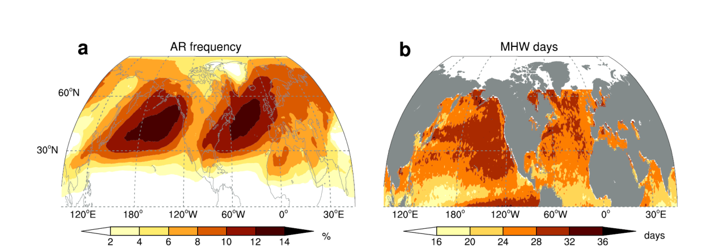
Climatological spatial distribution of (a) annual mean AR frequency (%) and (b) MHW days (day) during 1982–2023.
1982–2023 年期间 (a) 年平均 AR 频率（%）和 (b) MHW 日数（日）的气候态空间分布。
MHW days are not calculated in the region north of 65°N due to uncertainties related to sea ice cover.
由于与海冰覆盖有关的不确定性，未计算 65°N 以北区域的 MHW 日数。
PDF 第 4 页：补充图 2
Supplementary Fig. 2. Relationship between atmospheric rivers (ARs) and marine heatwaves (MHWs) in historical simulations from 15 CMIP6 models.
补充图 2. 15 个 CMIP6 模型历史模拟中大气河流（AR）与海洋热浪（MHW）之间的关系。
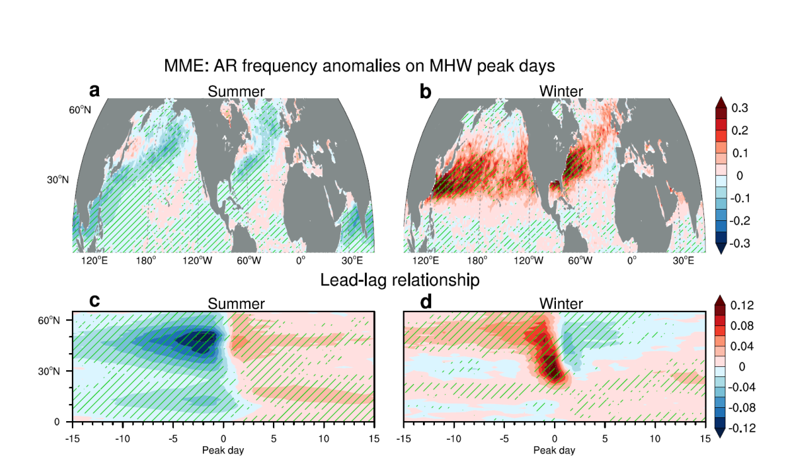
(a, b) Composite anomalies of daily AR frequency (%) on MHW peak days during boreal summer (June–August) and winter (December–February).
(a, b) 北半球夏季（6–8 月）和冬季（12–2 月）MHW 峰值日的日 AR 频率（%）合成异常。
(c, d) Composite anomalies of zonal-mean daily AR frequency (%) from 15 days before (−15) to 15 days after (+15) MHW peak days in summer and winter.
(c, d) 夏季和冬季中，从 MHW 峰值日前 15 天（−15）至峰值日后 15 天（+15）的纬向平均日 AR 频率（%）合成异常。
Hatched regions indicate areas where more than 70% of models (≥11 out of 15 models) exhibit the same sign as the multi-model ensemble mean (MME).
斜线阴影区域表示超过 70% 的模式（15 个中至少 11 个）的符号与多模式集合平均（MME）一致的区域。
PDF 第 5 页：补充图 3
Supplementary Fig. 3. Atmospheric river (AR) frequency anomalies preceding marine heatwave (MHW) peak days.
补充图 3. 海洋热浪（MHW）峰值日前的大气河流（AR）频率异常。
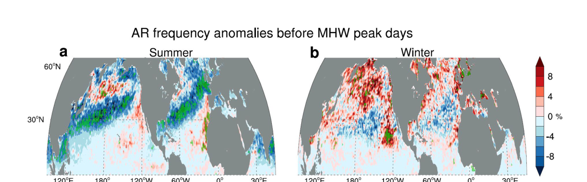
Composite anomalies of AR frequency (%) averaged over five days before MHW peaks in (a) summer and (b) winter.
MHW 峰值前五天平均的 AR 频率（%）合成异常，分别对应于 (a) 夏季和 (b) 冬季。
Hatched regions indicate areas where composite anomalies are statistically significant at the 90% confidence level.
斜线阴影区域表示合成异常在 90% 置信水平上具有统计显著性的区域。
PDF 第 6 页：补充图 4
Supplementary Fig. 4. Atmospheric river (AR) frequency anomalies preceding marine heatwave (MHW) peak days.
补充图 4. 海洋热浪（MHW）峰值日前的大气河流（AR）频率异常。
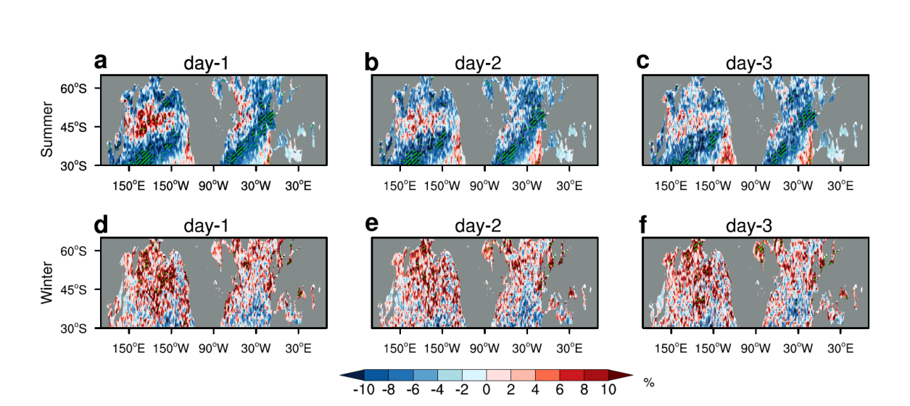
(a–c) Composites of daily AR frequency anomalies (%) since 3 days prior (day –3) to the peak of MHW events during boreal summer for the period of 1982–2023.
(a–c) 1982–2023 年期间北半球夏季 MHW 事件峰值前 3 天（第 −3 日）至峰值期间的日 AR 频率异常（%）合成。
(d-f) Same as (a-c), but during winter.
(d-f) 与 (a-c) 相同，但对应冬季。
Hatched regions indicates areas where composite anomalies are statistically significant at the 90% confidence level.
斜线阴影区域表示合成异常在 90% 置信水平上具有统计显著性的区域。
PDF 第 7 页：补充图 5
Supplementary Fig. 5. Sea surface temperature (SST) tendency during atmospheric river (AR) days.
补充图 5. 大气河流（AR）日期间的海表温度（SST）倾向。
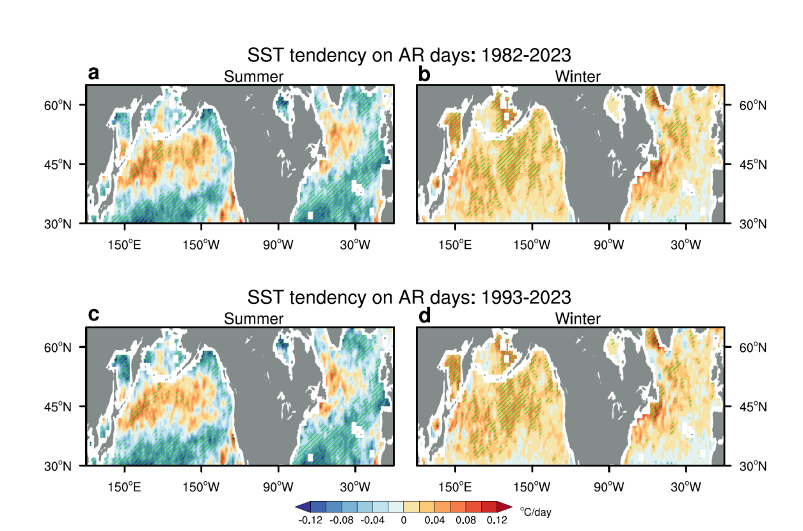
(a, b) Composite of SST tendency (℃/day) on AR days in boreal summer and winter for the period of 1982-2023.
(a, b) 1982-2023 年期间北半球夏季和冬季 AR 日的 SST 倾向（℃/day）合成。
(c, d) Same as (a, b) but for the period of 1993-2023 as a sensitivity test.
(c, d) 与 (a, b) 相同，但作为敏感性测试，时间段为 1993-2023 年。
Hatched regions indicates areas where composite anomalies are statistically significant at the 90% confidence level.
斜线阴影区域表示合成异常在 90% 置信水平上具有统计显著性的区域。
PDF 第 8 页：补充图 6
Supplementary Fig. 6. Horizontal oceanic advection (SSTAdvection) anomalies during atmospheric river (AR) days.
补充图 6. 大气河流（AR）日期间的水平海洋平流（SSTAdvection）异常。
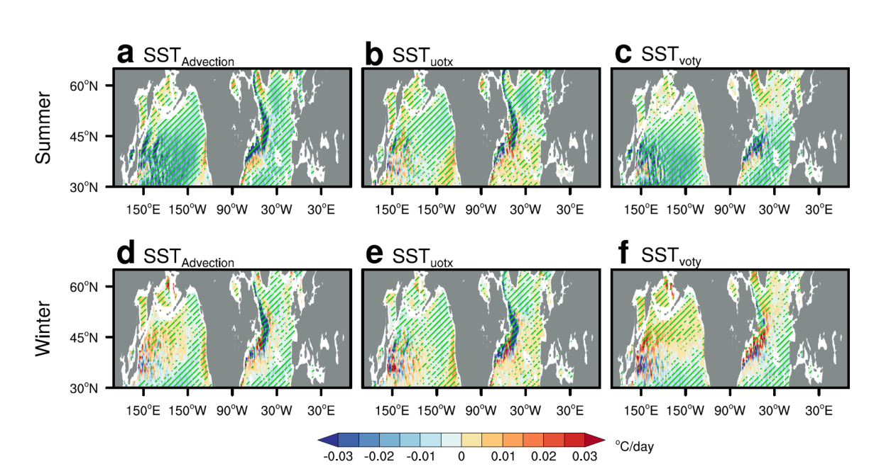
Composite anomalies (℃/day) of (a) horizontal oceanic advection, (b) its zonal component (SSTutox), and (c) its meridional component (SSTvoty) on summer AR days.
夏季 AR 日中 (a) 水平海洋平流、(b) 其纬向分量（SSTutox）和 (c) 其经向分量（SSTvoty）的合成异常（℃/day）。
(d-f) Same as (a-c), but for winter AR days.
(d-f) 与 (a-c) 相同，但对应冬季 AR 日。
Hatched regions indicate areas where composite anomalies are statistically significant at the 90% confidence level.
斜线阴影区域表示合成异常在 90% 置信水平上具有统计显著性的区域。
PDF 第 9 页：补充图 7
Supplementary Fig. 7. Atmospheric river (AR)-associated 10 m zonal wind anomalies.
补充图 7. 与大气河流（AR）相关的 10 m 纬向风异常。
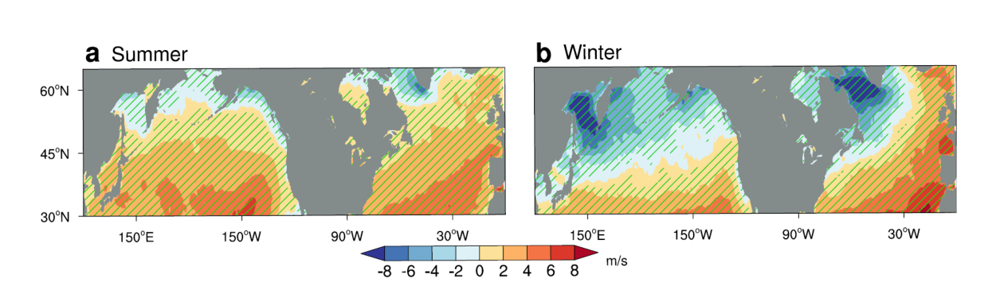
Composite 10 m zonal wind anomalies (shading; m/s) on (a) summer and (b) winter AR days.
(a) 夏季和 (b) 冬季 AR 日的 10 m 纬向风合成异常（填色；m/s）。
Hatched regions indicate areas where composite anomalies are statistically significant at the 90% confidence level.
斜线阴影区域表示合成异常在 90% 置信水平上具有统计显著性的区域。
PDF 第 10 页：补充图 8
Supplementary Fig. 8. Horizontal oceanic advection (SSTAdvection) anomalies during winter atmospheric river (AR) days.
补充图 8. 冬季大气河流（AR）日期间的水平海洋平流（SSTAdvection）异常。
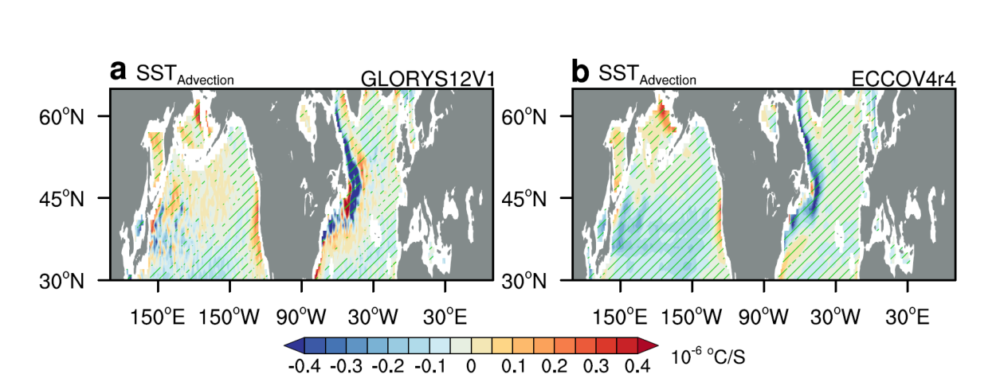
Composite anomalies (10−6 ℃/S) of horizontal oceanic advection on winter (October–March) AR days using (a) GLORYS12V1 and (b) ECCOV4r4.
使用 (a) GLORYS12V1 和 (b) ECCOV4r4 得到的冬季（10 月至 3 月）AR 日水平海洋平流合成异常（10−6 ℃/S）。
Hatched regions indicate areas where composite anomalies are statistically significant at the 90% confidence level.
斜线阴影区域表示合成异常在 90% 置信水平上具有统计显著性的区域。
PDF 第 11 页：补充图 9
Supplementary Fig. 9. Decomposition of net surface heat flux (Qnet) climatology.
补充图 9. 净表面热通量（Qnet）气候态的分解。
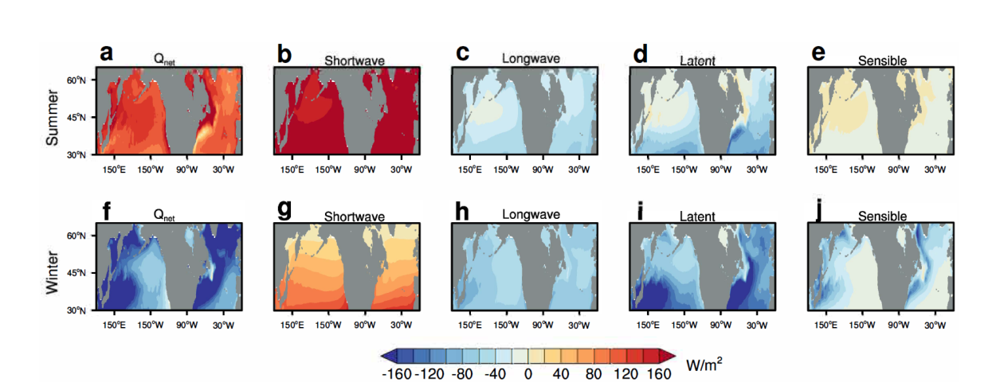
(a–e) Climatology (W/m²) of Qnet, net surface shortwave radiation, net surface longwave radiation, latent heat flux, and sensible heat flux during summer.
(a–e) 夏季 Qnet、净表面短波辐射、净表面长波辐射、潜热通量和感热通量的气候态（W/m²）。
(f–i) Same as (a–e), but for winter.
(f–i) 与 (a–e) 相同，但对应冬季。
PDF 第 12 页：补充图 10
Supplementary Fig. 10. Decomposition of net surface heat flux (Qnet) anomalies on atmospheric river (AR) days.
补充图 10. 大气河流（AR）日净表面热通量（Qnet）异常的分解。
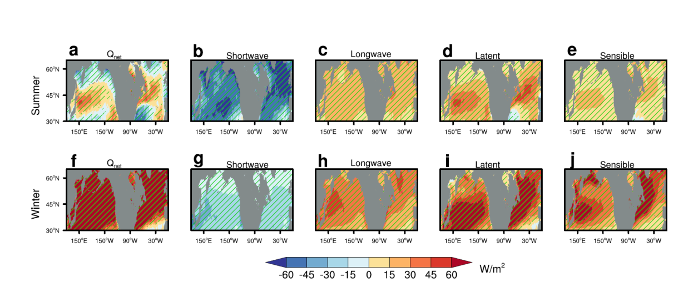
(a–e) Composite anomalies (W/m²) of Qnet, shortwave radiation, net longwave radiation, latent heat flux, and sensible heat flux during summer AR days.
(a–e) 夏季 AR 日 Qnet、短波辐射、净长波辐射、潜热通量和感热通量的合成异常（W/m²）。
(f–i) Same as (a–e), but for winter AR days.
(f–i) 与 (a–e) 相同，但对应冬季 AR 日。
Hatched regions indicate areas where composite anomalies are statistically significant at the 90% confidence level.
斜线阴影区域表示合成异常在 90% 置信水平上具有统计显著性的区域。
PDF 第 13 页：补充图 11
Supplementary Fig. 11. Shortwave radiation anomalies associated with atmospheric river (AR) days.
补充图 11. 与大气河流（AR）日相关的短波辐射异常。
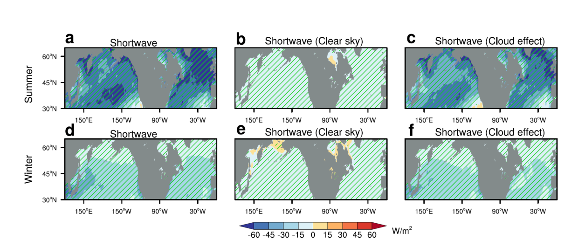
(a) Composite anomalies (W/m²) of total shortwave radiation during summer AR days.
(a) 夏季 AR 日总短波辐射的合成异常（W/m²）。
(b) and (c) show the contributions from clear-sky and cloud-related components, respectively.
(b) 和 (c) 分别显示晴空分量和与云相关分量的贡献。
(d–f) Same as (a–c), but for winter AR days.
(d–f) 与 (a–c) 相同，但对应冬季 AR 日。
Hatched regions indicate areas where composite anomalies are statistically significant at the 90% confidence level.
斜线阴影区域表示合成异常在 90% 置信水平上具有统计显著性的区域。
PDF 第 14 页：补充图 12
Supplementary Fig. 12. Longwave radiation anomalies associated with atmospheric river (AR) days.
补充图 12. 与大气河流（AR）日相关的长波辐射异常。
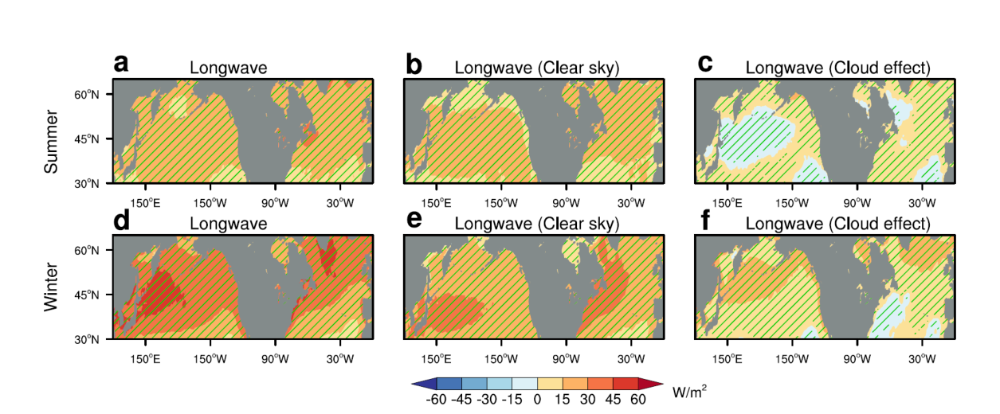
(a) Composite anomalies (W/m²) of total longwave radiation during summer AR days.
(a) 夏季 AR 日总长波辐射的合成异常（W/m²）。
(b) and (c) show the contributions from clear-sky and cloud-related components, respectively.
(b) 和 (c) 分别显示晴空分量和与云相关分量的贡献。
(d–f) Same as (a–c), but for winter AR days.
(d–f) 与 (a–c) 相同，但对应冬季 AR 日。
Hatched regions indicate areas where composite anomalies are statistically significant at the 90% confidence level.
斜线阴影区域表示合成异常在 90% 置信水平上具有统计显著性的区域。
PDF 第 15 页：补充图 13
Supplementary Fig. 13. Linear decomposition of turbulent heat flux anomalies associated with atmospheric river (AR) days.
补充图 13. 与大气河流（AR）日相关的湍流热通量异常的线性分解。
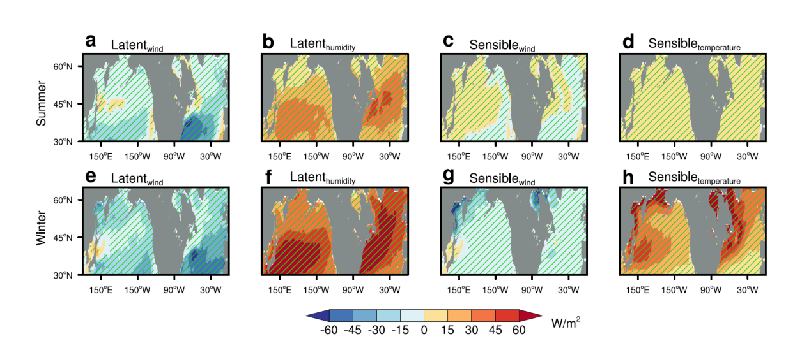
(a, b) Composite anomalies (W/m²) of net surface latent heat flux components attributable to wind speed anomalies (Latentwind) and humidity gradient anomalies (Latenthumidity) during summer AR days.
(a, b) 夏季 AR 日中由风速异常（Latentwind）和湿度梯度异常（Latenthumidity）所致的净表面潜热通量分量的合成异常（W/m²）。
(c, d) Composite anomalies (W/m²) of net surface sensible heat flux components attributable to wind speed anomalies (Sensiblewind) and temperature gradient anomalies (Sensibletemperature) during summer AR days.
(c, d) 夏季 AR 日中由风速异常（Sensiblewind）和温度梯度异常（Sensibletemperature）所致的净表面感热通量分量的合成异常（W/m²）。
(e, f) Same as (a, b), but for winter AR days.
(e, f) 与 (a, b) 相同，但对应冬季 AR 日。
(g, h) Same as (c, d), but for winter AR days.
(g, h) 与 (c, d) 相同，但对应冬季 AR 日。
Hatched regions indicate areas where composite anomalies are statistically significant at the 90% confidence level.
斜线阴影区域表示合成异常在 90% 置信水平上具有统计显著性的区域。
PDF 第 16 页：补充图 14
Supplementary Fig. 14. Climatology of 10 m wind speed.
补充图 14. 10 m 风速的气候态。
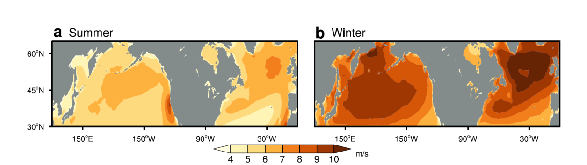
(a, b) Climatology (m/s) of 10 m wind speed during boreal summer and winter over the period of 1982-2023.
(a, b) 1982-2023 年期间北半球夏季和冬季 10 m 风速的气候态（m/s）。
PDF 第 17 页：补充图 15
Supplementary Fig. 15. Atmospheric river (AR)-related air-sea humidity and temperature contrasts.
补充图 15. 与大气河流（AR）相关的海气湿度和温度差异。
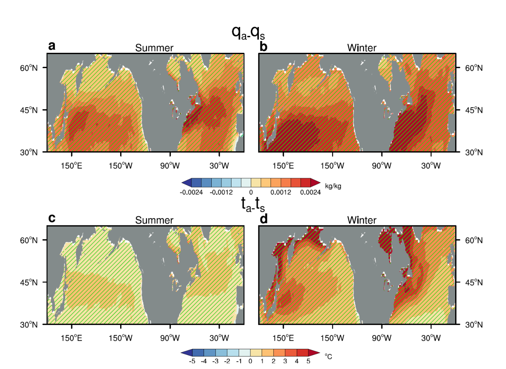
Composites of AR-related anomalies in air–sea specific humidity difference (kg/kg) during (a) summer and (b) winter AR days.
(a) 夏季和 (b) 冬季 AR 日期间海气比湿差（kg/kg）中与 AR 相关异常的合成。
(c–d) Same as (a–b), but for air–sea temperature difference anomalies (°C).
(c–d) 与 (a–b) 相同，但对应海气温度差异常（°C）。
Hatched regions indicate areas where composite anomalies are statistically significant at the 90% confidence level.
斜线阴影区域表示合成异常在 90% 置信水平上具有统计显著性的区域。
PDF 第 18 页：补充图 16
Supplementary Fig. 16. Decomposition of net surface heat flux (Qnet) anomalies on atmospheric river (AR) days.
补充图 16. 大气河流（AR）日净表面热通量（Qnet）异常的分解。
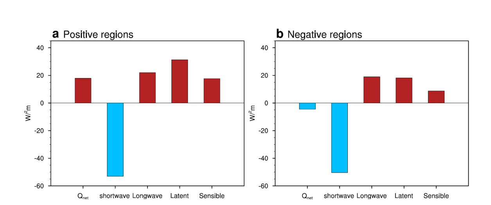
Composites of Qnet, net surface shortwave radiation, net surface longwave radiation, latent heat flux, and sensible heat flux anomalies (W/m²) during summer AR days in the positive (a) and negative (b) regions of sea surface temperature (SST) tendency.
夏季 AR 日中海表温度（SST）倾向为正（a）和为负（b）的区域内，Qnet、净表面短波辐射、净表面长波辐射、潜热通量和感热通量异常（W/m²）的合成。
PDF 第 19 页：补充图 17
Supplementary Fig. 17. Spatial decomposition of sea surface temperature (SST) tendency based on ocean mixed-layer heat budget analysis during atmospheric river (AR) days.
补充图 17. 基于大气河流（AR）日海洋混合层热收支分析的海表温度（SST）倾向空间分解。
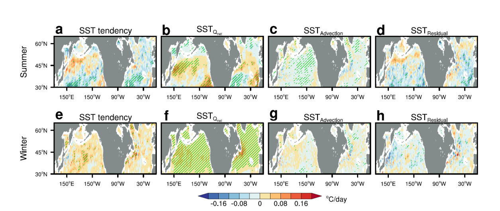
(a–d) Composite SST tendency (℃/day) and the contributions from net surface heat flux (SSTQnet), horizontal oceanic advection (SSTAdvection), and the residual term (SSTresidual) during summer AR days over the period 2019–2023.
(a–d) 2019–2023 年期间夏季 AR 日的 SST 倾向（℃/day）合成，以及净表面热通量（SSTQnet）、水平海洋平流（SSTAdvection）和残差项（SSTresidual）的贡献。
(e–h) Same as (a–d), but for winter AR days.
(e–h) 与 (a–d) 相同，但对应冬季 AR 日。
Hatched regions indicate areas where composite anomalies are statistically significant at the 90% confidence level.
斜线阴影区域表示合成异常在 90% 置信水平上具有统计显著性的区域。
PDF 第 20 页：补充图 18
Supplementary Fig. 18. Sea surface temperature (SST) tendency contributed by net surface heat flux (Qnet) anomalies during atmospheric river (AR) days.
补充图 18. 大气河流（AR）日期间由净表面热通量（Qnet）异常贡献的海表温度（SST）倾向。
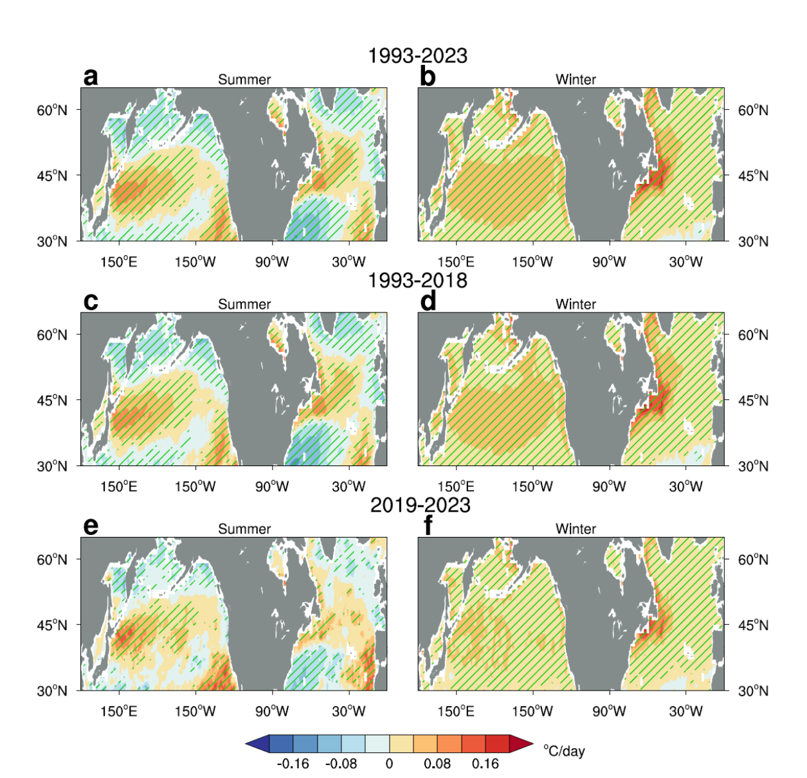
(a–b) Composite SST tendency (℃/day) contributed by Qnet anomalies during summer and winter AR days over the period 1993-2023.
(a–b) 1993-2023 年期间夏季和冬季 AR 日中由 Qnet 异常贡献的 SST 倾向（℃/day）合成。
(c–d) Same as (a–b), but for the period 1993-2018.
(c–d) 与 (a–b) 相同，但时间段为 1993-2018 年。
(e-f) Same as (a–b), but for the period 2019-2023.
(e-f) 与 (a–b) 相同，但时间段为 2019-2023 年。
Hatched regions indicate areas where composite anomalies are statistically significant at the 90% confidence level.
斜线阴影区域表示合成异常在 90% 置信水平上具有统计显著性的区域。
PDF 第 21 页：补充图 19
Supplementary Fig. 19. Relationship between atmospheric rivers (ARs) and marine heatwaves (MHWs) based on detrended datasets.
补充图 19. 基于去趋势数据集的大气河流（AR）与海洋热浪（MHW）之间的关系。
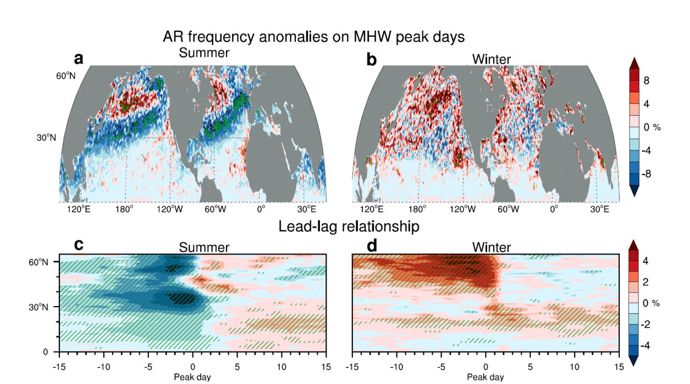
(a, b) Composite anomalies of daily AR frequency (%) on MHW peak days during boreal summer (June–August) and winter (December–February).
(a, b) 北半球夏季（6–8 月）和冬季（12–2 月）MHW 峰值日的日 AR 频率（%）合成异常。
(c, d) Composite anomalies of zonal-mean daily AR frequency (%) from 15 days before (−15) to 15 days after (+15) MHW peak days in summer and winter.
(c, d) 夏季和冬季中，从 MHW 峰值日前 15 天（−15）至峰值日后 15 天（+15）的纬向平均日 AR 频率（%）合成异常。
Hatched regions indicate areas where composite anomalies are statistically significant at the 90% confidence level.
斜线阴影区域表示合成异常在 90% 置信水平上具有统计显著性的区域。
PDF 第 22 页：补充图 20
Supplementary Fig. 20. Relationship between atmospheric rivers (ARs) and marine heatwaves (MHWs) based on AR-CONNECT detection algorithm.
补充图 20. 基于 AR-CONNECT 检测算法的大气河流（AR）与海洋热浪（MHW）之间的关系。
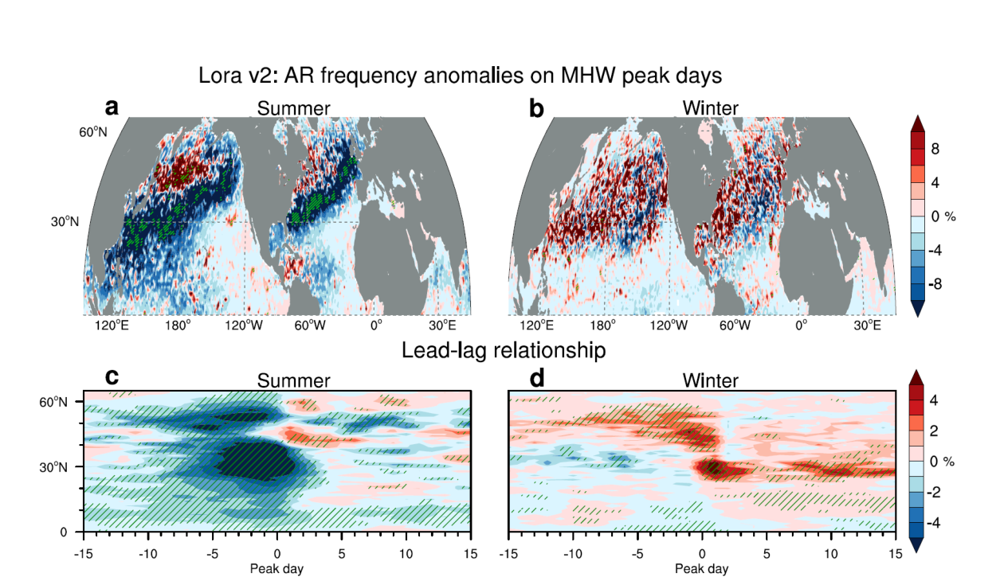
(a, b) Composite anomalies of daily AR frequency (%) on MHW peak days during boreal summer (June–August) and winter (December–February).
(a, b) 北半球夏季（6–8 月）和冬季（12–2 月）MHW 峰值日的日 AR 频率（%）合成异常。
(c, d) Composite anomalies of zonal-mean daily AR frequency (%) from 15 days before (−15) to 15 days after (+15) MHW peak days in summer and winter.
(c, d) 夏季和冬季中，从 MHW 峰值日前 15 天（−15）至峰值日后 15 天（+15）的纬向平均日 AR 频率（%）合成异常。
Hatched regions indicate areas where composite anomalies are statistically significant at the 90% confidence level.
斜线阴影区域表示合成异常在 90% 置信水平上具有统计显著性的区域。
PDF 第 23 页：补充图 21
Supplementary Fig. 21. Relationship between atmospheric rivers (ARs) and marine heatwaves (MHWs) based on Lora v2 detection algorithm.
补充图 21. 基于 Lora v2 检测算法的大气河流（AR）与海洋热浪（MHW）之间的关系。
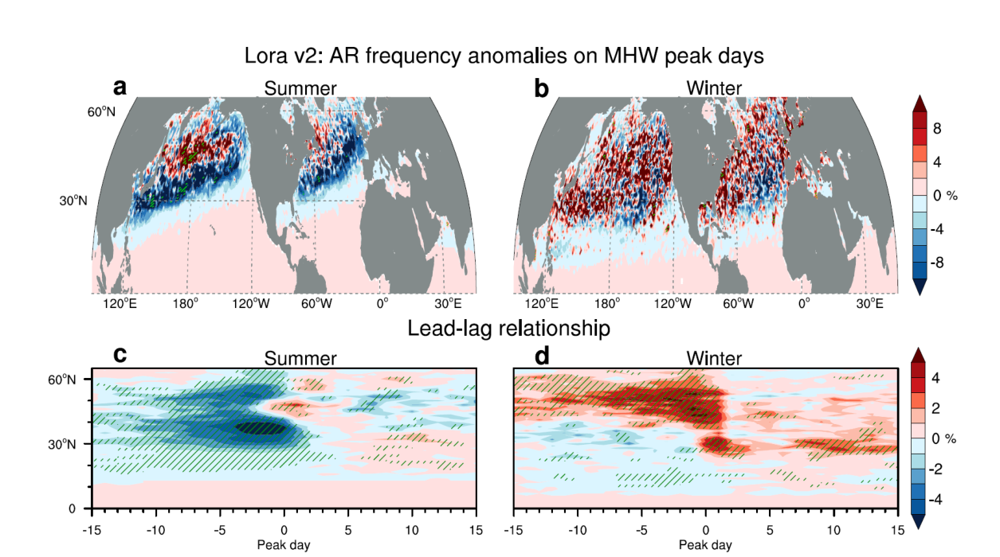
(a, b) Composite anomalies of daily AR frequency (%) on MHW peak days during boreal summer (June–August) and winter (December–February).
(a, b) 北半球夏季（6–8 月）和冬季（12–2 月）MHW 峰值日的日 AR 频率（%）合成异常。
(c, d) Composite anomalies of zonal-mean daily AR frequency (%) from 15 days before (−15) to 15 days after (+15) MHW peak days in summer and winter.
(c, d) 夏季和冬季中，从 MHW 峰值日前 15 天（−15）至峰值日后 15 天（+15）的纬向平均日 AR 频率（%）合成异常。
Hatched regions indicate areas where composite anomalies are statistically significant at the 90% confidence level.
斜线阴影区域表示合成异常在 90% 置信水平上具有统计显著性的区域。